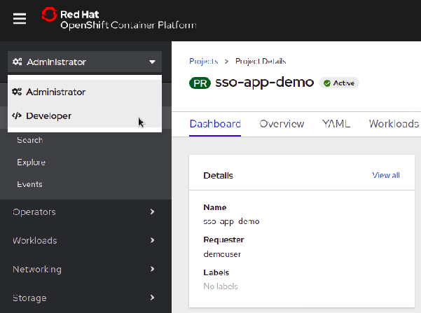
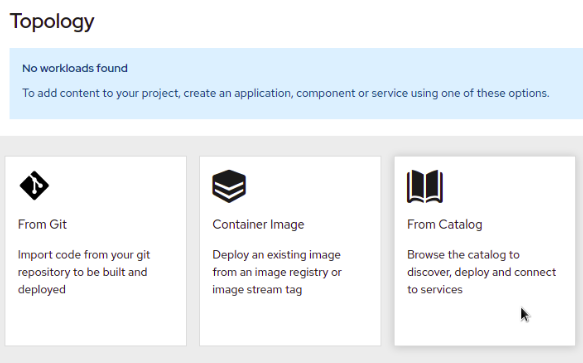
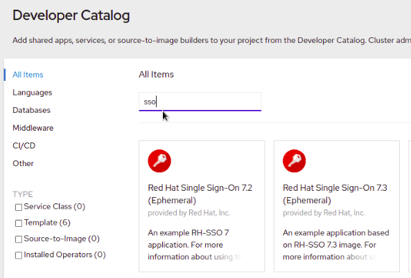
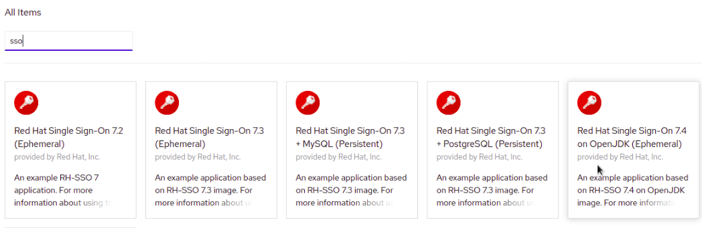
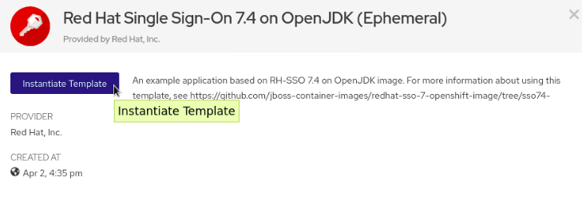
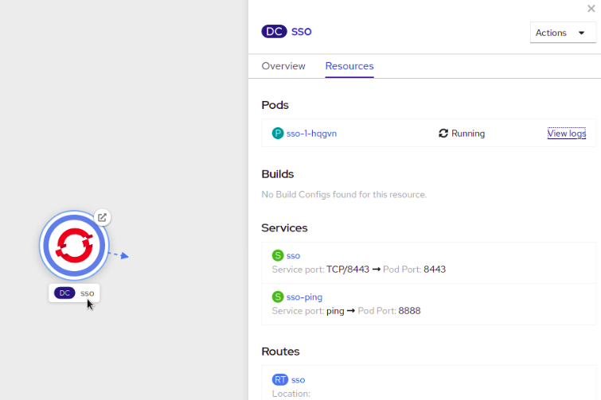
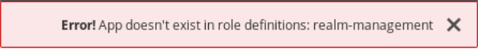
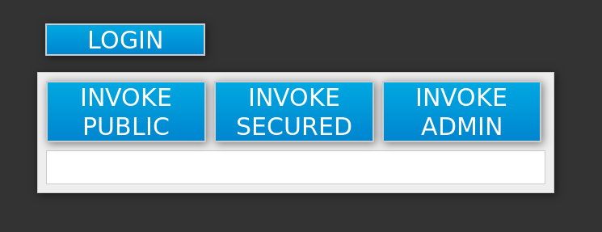
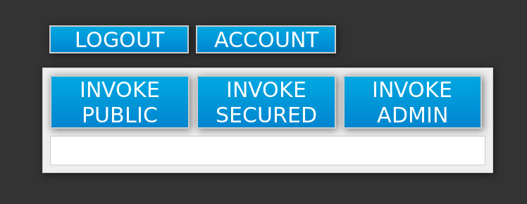

Red Hat Single Sign-On for OpenShift on Eclipse OpenJ9
For use with Red Hat Single Sign-On 7.5
Abstract
- Making open source more inclusive
- 1. Introduction
- 2. Before You Begin
- 3. Get Started
- 4. Advanced Concepts
- 4.1. Requirements and Deploying Passthrough TLS Termination Red Hat Single Sign-On Templates
- 4.2. Customizing the Hostname for the Red Hat Single Sign-On Server
- 4.3. Connecting to an external database
- 4.4. Using Custom JDBC Driver
- 4.5. Creating the Administrator Account for Red Hat Single Sign-On Server
- 4.6. Customizing the default behavior of the Red Hat Single Sign-On image
- 4.7. Deployment Process
- 4.8. Red Hat Single Sign-On Clients
- 4.9. Using Red Hat Single Sign-On vault with OpenShift secrets
- 4.10. Limitations
- 5. Tutorials
- 5.1. Example Workflow: Updating Existing Database to Migrate to New Red Hat Single Sign-On for OpenShift Image Version
- 5.2. Example Workflow: Migrating The Red Hat Single Sign-On Server’s Database Across Environments
- 5.2.1. Deploying the Red Hat Single Sign-On PostgreSQL Application Template
- 5.2.2. (Optional) Creating additional Red Hat Single Sign-On realm and users to be also exported
- 5.2.3. Export the Red Hat Single Sign-On database as a JSON file on the OpenShift pod
- 5.2.4. Retrieve and import the exported JSON file
- 5.3. Example Workflow: Configuring OpenShift 3.11 to use Red Hat Single Sign-On for Authentication
- 5.4. Example Workflow: Creating OpenShift Application from Existing Maven Binaries and Securing it Using Red Hat Single Sign-On
- 5.5. Example Workflow: Automatically Registering EAP Application in Red Hat Single Sign-On with OpenID-Connect Client
- 5.6. Example Workflow: Manually Registering EAP Application in Red Hat Single Sign-On with SAML Client
- 6. Reference
- 6.1. Artifact Repository Mirrors
- 6.2. Environment Variables
- 6.2.1. Information Environment Variables
- 6.2.2. Configuration Environment Variables
- 6.2.3. Template variables for all Red Hat Single Sign-On images
- 6.2.4. Template variables specific to sso75-openj9-postgresql, sso75-openj9-postgresql-persistent, and sso75-openj9-x509-postgresql-persistent
- 6.2.5. Template variables for general eap64 and eap71 S2I images
- 6.2.6. Template variables specific to eap64-sso-s2i and eap71-sso-s2i for automatic client registration
- 6.2.7. Template variables specific to eap64-sso-s2i and eap71-sso-s2i for automatic client registration with SAML clients
- 6.3. Exposed Ports
Making open source more inclusive
Red Hat is committed to replacing problematic language in our code, documentation, and web properties. We are beginning with these four terms: master, slave, blacklist, and whitelist. Because of the enormity of this endeavor, these changes will be implemented gradually over several upcoming releases. For more details, see our CTO Chris Wright’s message.
Chapter 1. Introduction
1.1. What Is Red Hat Single Sign-On?
Red Hat Single Sign-On is an integrated sign-on solution available as a Red Hat JBoss Middleware for OpenShift containerized image. The Red Hat Single Sign-On for OpenShift image provides an authentication server for users to centrally log in, log out, register, and manage user accounts for web applications, mobile applications, and RESTful web services.
Red Hat Single Sign-On for OpenShift on Eclipse OpenJ9 is only available on the following platforms: IBM Z/IBM Power Systems. For other available platforms, see Red Hat Single Sign-On for OpenShift on OpenJDK.
Red Hat offers multiple OpenShift application templates utilizing the Red Hat Single Sign-On for OpenShift image version number 7.5.0. These define the resources needed to develop Red Hat Single Sign-On 7.5.0 server based deployment and can be split into the following two categories:
Templates using HTTPS and JGroups keystores and a truststore for the Red Hat Single Sign-On server, all prepared beforehand. These secure the TLS communication using passthrough TLS termination:
- sso75-openj9-https: Red Hat Single Sign-On 7.5.0 backed by internal H2 database on the same pod.
- sso75-openj9-postgresql: Red Hat Single Sign-On 7.5.0 backed by ephemeral PostgreSQL database on a separate pod.
- sso75-openj9-postgresql-persistent: Red Hat Single Sign-On 7.5.0 backed by persistent PostgreSQL database on a separate pod.
Templates for using Red Hat Single Sign-On with MySQL / MariaDB databases have been removed and are not available since Red Hat Single Sign-On version 7.4.
Templates using OpenShift’s internal service serving x509 certificate secrets to automatically create the HTTPS keystore used for serving secure content. The JGroups cluster traffic is authenticated using the
AUTHprotocol and encrypted using theASYM_ENCRYPTprotocol. The Red Hat Single Sign-On server truststore is also created automatically, containing the /var/run/secrets/kubernetes.io/serviceaccount/service-ca.crt CA certificate file, which is used to sign the certificate for HTTPS keystore. Moreover, the truststore for the Red Hat Single Sign-On server is pre-populated with the all known, trusted CA certificate files found in the Java system path. These templates secure the TLS communication using re-encryption TLS termination:-
sso75-openj9-x509-https: Red Hat Single Sign-On 7.5.0 with auto-generated HTTPS keystore and Red Hat Single Sign-On truststore, backed by internal H2 database. The
ASYM_ENCRYPTJGroups protocol is used for encryption of cluster traffic. -
sso75-openj9-x509-postgresql-persistent: Red Hat Single Sign-On 7.5.0 with auto-generated HTTPS keystore and Red Hat Single Sign-On truststore, backed by persistent PostgreSQL database. The
ASYM_ENCRYPTJGroups protocol is used for encryption of cluster traffic.
-
sso75-openj9-x509-https: Red Hat Single Sign-On 7.5.0 with auto-generated HTTPS keystore and Red Hat Single Sign-On truststore, backed by internal H2 database. The
Other templates that integrate with Red Hat Single Sign-On are also available:
- eap64-sso-s2i: Red Hat Single Sign-On-enabled Red Hat JBoss Enterprise Application Platform 6.4.
- eap71-sso-s2i: Red Hat Single Sign-On-enabled Red Hat JBoss Enterprise Application Platform 7.1.
- datavirt63-secure-s2i: Red Hat Single Sign-On-enabled Red Hat JBoss Data Virtualization 6.3.
These templates contain environment variables specific to Red Hat Single Sign-On that enable automatic Red Hat Single Sign-On client registration when deployed.
See Automatic and Manual Red Hat Single Sign-On Client Registration Methods for more information.
Chapter 2. Before You Begin
2.1. Comparison: Red Hat Single Sign-On for OpenShift Image and Red Hat Single Sign-On
The Red Hat Single Sign-On for OpenShift image version number 7.5.0 is based on Red Hat Single Sign-On 7.5.0. There are some differences in functionality between the Red Hat Single Sign-On for OpenShift image and Red Hat Single Sign-On:
- The Red Hat Single Sign-On for OpenShift image includes all of the functionality of Red Hat Single Sign-On. In addition, the Red Hat Single Sign-On-enabled JBoss EAP image automatically handles OpenID Connect or SAML client registration and configuration for .war deployments that contain <auth-method>KEYCLOAK</auth-method> or <auth-method>KEYCLOAK-SAML</auth-method> in their respective web.xml files.
2.2. Version Compatibility and Support
See the xPaaS part of the OpenShift and Atomic Platform Tested Integrations page for details about OpenShift image version compatibility.
2.3. Deprecated Image Streams and Application Templates for Red Hat Single Sign-On for OpenShift
The Red Hat Single Sign-On for OpenShift image version number between 7.0 and 7.3 are deprecated and they will no longer receive updates of image and application templates.
To deploy new applications, it is recommended to use the version 7.4 or 7.5.0 of the Red Hat Single Sign-On for OpenShift image along with the application templates specific to these image versions.
2.4. Initial Setup
The Tutorials in this guide follow on from and assume an OpenShift instance similar to that created by performing the installation of the OpenShift Container Platform cluster.
For information related to updating the existing database when migrating Red Hat Single Sign-On for OpenShift image from previous versions to version 7.5.0, see the Updating Existing Database when Migrating Red Hat Single Sign-On for OpenShift Image to a new version section.
Chapter 3. Get Started
3.1. Using the Red Hat Single Sign-On for OpenShift Image Streams and Application Templates
Red Hat JBoss Middleware for OpenShift images are pulled on demand from the secured Red Hat Registry: registry.redhat.io, which requires authentication. To retrieve content, you will need to log into the registry using the Red Hat account.
To consume container images from registry.redhat.io in shared environments such as OpenShift, it is recommended for an administrator to use a Registry Service Account, also referred to as authentication tokens, in place of an individual person’s Red Hat Customer Portal credentials.
To create a Registry Service Account, navigate to the Registry Service Account Management Application, and log in if necessary.
- From the Registry Service Accounts page, click Create Service Account.
Provide a name for the Service Account, for example registry.redhat.io-sa. It will be prepended with a fixed, random string.
- Enter a description for the Service Account, for example Service account to consume container images from registry.redhat.io..
- Click Create.
- After the Service Account was created, click the registry.redhat.io-sa link in the Account name column of the table presented on the Registry Service Accounts page.
- Finally, click the OpenShift Secret tab, and perform all steps listed on that page.
See the Red Hat Container Registry Authentication article for more information.
- Ensure that you are logged in as a cluster administrator or a user with project administrator access to the global openshift project:
Choose a command based on your version of OpenShift Container Platform.
If you are running an OpenShift Container Platform v3 based cluster instance on (some) of your master host(s), perform the following:
$ oc login -u system:admin
If you are running an OpenShift Container Platform v4 based cluster instance, log in to the CLI as the kubeadmin user:
$ oc login -u kubeadmin -p password https://openshift.example.com:6443
Run the following commands to update the core set of Red Hat Single Sign-On 7.5.0 resources for OpenShift in the
openshiftproject:$ for resource in sso75-openj9-image-stream.json \ sso75-openj9-https.json \ sso75-openj9-postgresql.json \ sso75-openj9-postgresql-persistent.json \ sso75-openj9-x509-https.json \ sso75-openj9-x509-postgresql-persistent.json do oc replace -n openshift --force -f \ https://raw.githubusercontent.com/jboss-container-images/redhat-sso-7-openshift-image/sso75-cpaas-dev/templates/openj9/${resource} doneRun the following command to install the Red Hat Single Sign-On 7.5.0 OpenShift image streams in the
openshiftproject:$ oc -n openshift import-image rh-sso-7/sso75-openj9-openshift-rhel8:7.5 --from=registry.redhat.io/rh-sso-7/sso75-openj9-openshift-rhel8:7.5 --confirm
3.2. Deploying the Red Hat Single Sign-On Image
3.2.1. Preparing the Deployment
Log in to the OpenShift CLI with a user that holds the cluster:admin role.
Create a new project:
$ oc new-project sso-app-demo
Add the
viewrole to thedefaultservice account. This enables the service account to view all the resources in the sso-app-demo namespace, which is necessary for managing the cluster.$ oc policy add-role-to-user view system:serviceaccount:$(oc project -q):default
3.2.2. Deploying the Red Hat Single Sign-On Image using the Application Template
3.2.2.1. Deploying the Template using OpenShift CLI
List the available Red Hat Single Sign-On application templates:
$ oc get templates -n openshift -o name | grep -o 'sso75-openj9.\+' sso75-openj9-https sso75-openj9-postgresql sso75-openj9-postgresql-persistent sso75-openj9-x509-https sso75-openj9-x509-postgresql-persistent
Deploy the selected one:
$ oc new-app --template=sso75-openj9-x509-https --> Deploying template "openshift/sso75-openj9-x509-https" to project sso-app-demo Red Hat Single Sign-On 7.5 (Ephemeral) --------- An example Red Hat Single Sign-On 7 application. For more information about using this template, see <link xlink:href="https://github.com/jboss-openshift/application-templates">https://github.com/jboss-openshift/application-templates</link>. A new Red Hat Single Sign-On service has been created in your project. The admin username/password for accessing the master realm using the Red Hat Single Sign-On console is IACfQO8v/nR7llVSVb4Dye3TNRbXoXhRpAKTmiCRc. The HTTPS keystore used for serving secure content, the JGroups keystore used for securing JGroups communications, and server truststore used for securing Red Hat Single Sign-On requests were automatically created using OpenShift's service serving x509 certificate secrets. * With parameters: * Application Name=sso * JGroups Cluster Password=jg0Rssom0gmHBnooDF3Ww7V4Mu5RymmB # generated * Datasource Minimum Pool Size= * Datasource Maximum Pool Size= * Datasource Transaction Isolation= * ImageStream Namespace=openshift * Red Hat Single Sign-On Administrator Username=IACfQO8v # generated * Red Hat Single Sign-On Administrator Password=nR7llVSVb4Dye3TNRbXoXhRpAKTmiCRc # generated * Red Hat Single Sign-On Realm= * Red Hat Single Sign-On Service Username= * Red Hat Single Sign-On Service Password= * Container Memory Limit=1Gi --> Creating resources ... service "sso" created service "secure-sso" created service "sso-ping" created route "sso" created route "secure-sso" created deploymentconfig "sso" created --> Success Run 'oc status' to view your app.
Alternatively, perform one of the following procedures to deploy the Red Hat Single Sign-On template by using the OpenShift 3.x or 4.x web console.
3.2.2.2. Deploying the Template using the OpenShift 3.x Web Console
- Log in to the OpenShift web console and select the sso-app-demo project space.
- Click Add to Project, then Browse Catalog to list the default image streams and templates.
- Use the Filter by Keyword search bar to limit the list to those that match sso. You may need to click Middleware, then Integration to show the desired application template.
- Select an Red Hat Single Sign-On application template. This example uses Red Hat Single Sign-On 7.5 (Ephemeral).
- Click Next in the Information step.
- From the Add to Project drop-down menu, select the sso-app-demo project space. Then click Next.
- Select Do not bind at this time radio button in the Binding step. Click Create to continue.
- In the Results step, click the Continue to the project overview link to verify the status of the deployment.
3.2.2.3. Deploying the Template using the OpenShift 4.x Web Console
Prerequisites
- Perform the steps described in Using the Red Hat Single Sign-On for OpenShift Image Streams and Application Templates.
Procedure
- Log in to the OpenShift web console and select the sso-app-demo project space.
On the left sidebar, click the
Administratortab and then click</> Developer.
Click
From Catalog.
Search for
sso.
Choose a template such as
Red Hat Single Sign-On 7.4 on OpenJDK (Ephemeral).
Click
Instantiate Template.
-
Adjust the template parameters if necessary and click
Create. Verify the Red Hat Single Sign-On for OpenShift image was deployed.

3.2.3. Accessing the Administrator Console of the Red Hat Single Sign-On Pod
After the template is deployed, identify the available routes:
$ oc get routes NAME HOST/PORT sso sso-sso-app-demo.openshift.example.com
and access the Red Hat Single Sign-On administrator console at:
- https://sso-sso-app-demo.openshift.example.com/auth/admin
using the administrator account.
Chapter 4. Advanced Concepts
These cover additional configuration topics, such as seting up keystores and a truststore for the Red Hat Single Sign-On server, creating an administrator account, an overview of available Red Hat Single Sign-On client registration methods, and guidance on configuring clustering.
4.1. Requirements and Deploying Passthrough TLS Termination Red Hat Single Sign-On Templates
4.1.1. Preparing the Deployment
Log in to the OpenShift CLI with a user that holds the cluster:admin role.
Create a new project:
$ oc new-project sso-app-demo
Add the
viewrole to thedefaultservice account. This enables the service account to view all the resources in the sso-app-demo namespace, which is necessary for managing the cluster.$ oc policy add-role-to-user view system:serviceaccount:$(oc project -q):default
4.1.2. Creating HTTPS and JGroups Keystores, and Truststore for the Red Hat Single Sign-On Server
The Red Hat Single Sign-On application templates using passthrough TLS termination require:
- An HTTPS keystore used for encryption of https traffic,
- The JGroups keystore used for encryption of JGroups communications between nodes in the cluster, and
- Red Hat Single Sign-On server truststore used for securing the Red Hat Single Sign-On requests
the Red Hat Single Sign-On for OpenShift image to be deployed properly.
The Red Hat Single Sign-On application templates using re-encryption TLS termination do not require or expect the aforementioned HTTPS and JGroups keystores and Red Hat Single Sign-On server truststore to be prepared beforehand. The templates use OpenShift’s internal service serving x509 certificate secrets to automatically create the HTTPS and JGroups keystores. The Red Hat Single Sign-On server truststore is also created automatically, containing the /var/run/secrets/kubernetes.io/serviceaccount/service-ca.crt CA certificate file, which is used to create these cluster certificates. Moreover, the truststore for the Red Hat Single Sign-On server is pre-populated with the all known, trusted CA certificate files found in the Java system path.
The openssl toolkit is used in the following example to generate a CA certificate to sign the HTTPS keystore, and create a truststore for the Red Hat Single Sign-On server. keytool, a package included with the Java Development Kit, is then utilized to the generate self-signed certificates for these keystores.
For production environments Red Hat recommends that you use your own SSL certificate purchased from a verified Certificate Authority (CA) for SSL-encrypted connections (HTTPS).
See the JBoss Enterprise Application Platform Security Guide for more information on how to create a keystore with self-signed or purchased SSL certificates.
Create the HTTPS keystore:
Generate a CA certificate. Pick and remember the password. Provide identical password, when signing the certificate sign request with the CA certificate below:
$ openssl req -new -newkey rsa:4096 -x509 -keyout xpaas.key -out xpaas.crt -days 365 -subj "/CN=xpaas-sso-demo.ca"
Generate a private key for the HTTPS keystore. Provide
mykeystorepassas the keystore password:$ keytool -genkeypair -keyalg RSA -keysize 2048 -dname "CN=secure-sso-sso-app-demo.openshift.example.com" -alias jboss -keystore keystore.jks
Generate a certificate sign request for the HTTPS keystore. Provide
mykeystorepassas the keystore password:$ keytool -certreq -keyalg rsa -alias jboss -keystore keystore.jks -file sso.csr
Sign the certificate sign request with the CA certificate. Provide the same password that was used to generate the CA certificate:
$ openssl x509 -req -CA xpaas.crt -CAkey xpaas.key -in sso.csr -out sso.crt -days 365 -CAcreateserial
Import the CA certificate into the HTTPS keystore. Provide
mykeystorepassas the keystore password. ReplyyestoTrust this certificate? [no]:question:$ keytool -import -file xpaas.crt -alias xpaas.ca -keystore keystore.jks
Import the signed certificate sign request into the HTTPS keystore. Provide
mykeystorepassas the keystore password:$ keytool -import -file sso.crt -alias jboss -keystore keystore.jks
Generate a secure key for the JGroups keystore:
Provide password as the keystore password:
$ keytool -genseckey -alias secret-key -storetype JCEKS -keystore jgroups.jceks
Import the CA certificate into a new Red Hat Single Sign-On server truststore:
Provide mykeystorepass as the truststore password. Reply yes to Trust this certificate? [no]: question:
$ keytool -import -file xpaas.crt -alias xpaas.ca -keystore truststore.jks
4.1.3. Secrets
OpenShift uses objects called secrets to hold sensitive information, such as passwords or keystores.
Create the secrets for the HTTPS and JGroups keystores, and Red Hat Single Sign-On server truststore, generated in the previous section.
$ oc create secret generic sso-app-secret --from-file=keystore.jks --from-file=jgroups.jceks --from-file=truststore.jks
Link these secrets to the default service account, which is used to run Red Hat Single Sign-On pods.
$ oc secrets link default sso-app-secret
4.1.4. Deploying the Chosen Red Hat Single Sign-On Passthrough TLS Template via OpenShift CLI
After the aforementioned keystores and secrets are created, deploy some of the available passthrough TLS termination as follows:
For simplicity, the values of SSO_ADMIN_USERNAME, SSO_ADMIN_PASSWORD, HTTPS_PASSWORD, JGROUPS_ENCRYPT_PASSWORD, and SSO_TRUSTSTORE_PASSWORD variables in the following command have been chosen to match the default values of the respective parameters of the sso75-openj9-https Red Hat Single Sign-On application template.
For production environments, Red Hat recommends that you consult the on-site policy, specific to your organization for guidance on how to generate sufficiently strong user name and password for the administrator user account of the Red Hat Single Sign-On server, and passwords for the HTTPS and JGroups keystores, and the truststore of the Red Hat Single Sign-On server.
Be aware that the passwords provided when provisioning the template need to match the passwords provided when creating the keystores. If using different username and passwords, modify the values of respective template parameters as appropriate for your environment.
The following commands using the keytool, a package included with the Java Development Kit, can be used to determine the names associated with the certificate:
$ keytool -v -list -keystore keystore.jks | grep Alias Enter keystore password: mykeystorepass Alias name: xpaas.ca Alias name: jboss
$ keytool -v -list -keystore jgroups.jceks -storetype jceks | grep Alias Enter keystore password: password Alias name: secret-key
Finally, the SSO_ADMIN_USERNAME, SSO_ADMIN_PASSWORD, and the SSO_REALM template parameters in the following command are optional.
$ oc new-app --template=sso75-openj9-https \
-p HTTPS_SECRET="sso-app-secret" \
-p HTTPS_KEYSTORE="keystore.jks" \
-p HTTPS_NAME="jboss" \
-p HTTPS_PASSWORD="mykeystorepass" \
-p JGROUPS_ENCRYPT_SECRET="sso-app-secret" \
-p JGROUPS_ENCRYPT_KEYSTORE="jgroups.jceks" \
-p JGROUPS_ENCRYPT_NAME="secret-key" \
-p JGROUPS_ENCRYPT_PASSWORD="password" \
-p SSO_ADMIN_USERNAME="admin" \
-p SSO_ADMIN_PASSWORD="redhat" \
-p SSO_REALM="demorealm" \
-p SSO_TRUSTSTORE="truststore.jks" \
-p SSO_TRUSTSTORE_PASSWORD="mykeystorepass" \
-p SSO_TRUSTSTORE_SECRET="sso-app-secret"
--> Deploying template "openshift/sso75-openj9-https" to project sso-app-demo
Red Hat Single Sign-On 7.5.0 (Ephemeral with passthrough TLS)
---------
An example Red Hat Single Sign-On 7 application. For more information about using this template, see https://github.com/jboss-openshift/application-templates.
A new Red Hat Single Sign-On service has been created in your project. The admin username/password for accessing the master realm via the Red Hat Single Sign-On console is admin/redhat. Please be sure to create the following secrets: "sso-app-secret" containing the keystore.jks file used for serving secure content; "sso-app-secret" containing the jgroups.jceks file used for securing JGroups communications; "sso-app-secret" containing the truststore.jks file used for securing Red Hat Single Sign-On requests.
* With parameters:
* Application Name=sso
* Custom http Route Hostname=
* Custom https Route Hostname=
* Server Keystore Secret Name=sso-app-secret
* Server Keystore Filename=keystore.jks
* Server Keystore Type=
* Server Certificate Name=jboss
* Server Keystore Password=mykeystorepass
* Datasource Minimum Pool Size=
* Datasource Maximum Pool Size=
* Datasource Transaction Isolation=
* JGroups Secret Name=sso-app-secret
* JGroups Keystore Filename=jgroups.jceks
* JGroups Certificate Name=secret-key
* JGroups Keystore Password=password
* JGroups Cluster Password=yeSppLfp # generated
* ImageStream Namespace=openshift
* Red Hat Single Sign-On Administrator Username=admin
* Red Hat Single Sign-On Administrator Password=redhat
* Red Hat Single Sign-On Realm=demorealm
* Red Hat Single Sign-On Service Username=
* Red Hat Single Sign-On Service Password=
* Red Hat Single Sign-On Trust Store=truststore.jks
* Red Hat Single Sign-On Trust Store Password=mykeystorepass
* Red Hat Single Sign-On Trust Store Secret=sso-app-secret
* Container Memory Limit=1Gi
--> Creating resources ...
service "sso" created
service "secure-sso" created
service "sso-ping" created
route "sso" created
route "secure-sso" created
deploymentconfig "sso" created
--> Success
Run 'oc status' to view your app.4.2. Customizing the Hostname for the Red Hat Single Sign-On Server
The hostname SPI introduced a flexible way to configure the hostname for the Red Hat Single Sign-On server. The default hostname provider one is default. This provider provides enhanced functionality over the original request provider which is now deprecated. Without additional settings, it uses the request headers to determine the hostname similarly to the original request provider.
For configuration options of the default provider, refer to the Server Installation and Configuration Guide. The frontendUrl option can be configured via SSO_FRONTEND_URL environment variable.
For backward compatibility, SSO_FRONTEND_URL settings is ignored if SSO_HOSTNAME is also set.
Another option of hostname provider is fixed, which allows configuring a fixed hostname. The latter makes sure that only valid hostnames can be used and allows internal applications to invoke the Red Hat Single Sign-On server through an alternative URL.
Run the following commands to set the fixed hostname SPI provider for the Red Hat Single Sign-On server:
Deploy the Red Hat Single Sign-On for OpenShift image with SSO_HOSTNAME environment variable set to the desired hostname of the Red Hat Single Sign-On server.
$ oc new-app --template=sso75-openj9-x509-https \ -p SSO_HOSTNAME="rh-sso-server.openshift.example.com"
Identify the name of the route for the Red Hat Single Sign-On service.
$ oc get routes NAME HOST/PORT sso sso-sso-app-demo.openshift.example.com
Change the
host:field to match the hostname specified as the value of the SSO_HOSTNAME environment variable above.NoteAdjust the
rh-sso-server.openshift.example.comvalue in the following command as necessary.$ oc patch route/sso --type=json -p '[{"op": "replace", "path": "/spec/host", "value": "rh-sso-server.openshift.example.com"}]'If successful, the previous command will return the following output:
route "sso" patched
4.3. Connecting to an external database
Red Hat Single Sign-On can be configured to connect to an external (to OpenShift cluster) database. In order to achieve this, you need to modify the sso-{database name} Endpoints object to point to the proper address. The procedure is described in the OpenShift manual.
Tip: The easiest way to get started is to deploy Red Hat Single Sign-On from a template and then modify the Endpoints object. You might also need to update some of the datasource configuration variables in the DeploymentConfig. Once you’re done, just roll a new deployment out.
4.4. Using Custom JDBC Driver
To connect to any database, the JDBC driver for that database must be present and Red Hat Single Sign-On configured properly. Currently, the only JDBC driver available in the image is the PostgreSQL JDBC driver. For any other database, you need to extend the Red Hat Single Sign-On image with a custom JDBC driver and a CLI script to register it and set up the connection properties. The following steps illustrate how to do that, taking MariaDB driver as an example. Update the example for other database drivers accordingly.
- Create an empty directory.
- Download the JDBC driver binaries into this directory.
Create a new
Dockerfilefile in this directory with the following contents. For other databases, replacemariadb-java-client-2.5.4.jarwith the filename of the respective driver:FROM rh-sso-7/sso75-openj9-openshift-rhel8:latest COPY sso-extensions.cli /opt/eap/extensions/ COPY mariadb-java-client-2.5.4.jar /opt/eap/extensions/jdbc-driver.jar
Create a new
sso-extensions.clifile in this directory with the following contents. Update the values of the variables in italics according to the deployment needs:batch set DB_DRIVER_NAME=mariadb set DB_USERNAME=username set DB_PASSWORD=password set DB_DRIVER=org.mariadb.jdbc.Driver set DB_XA_DRIVER=org.mariadb.jdbc.MariaDbDataSource set DB_JDBC_URL=jdbc:mariadb://jdbc-host/keycloak set DB_EAP_MODULE=org.mariadb set FILE=/opt/eap/extensions/jdbc-driver.jar module add --name=$DB_EAP_MODULE --resources=$FILE --dependencies=javax.api,javax.resource.api /subsystem=datasources/jdbc-driver=$DB_DRIVER_NAME:add( \ driver-name=$DB_DRIVER_NAME, \ driver-module-name=$DB_EAP_MODULE, \ driver-class-name=$DB_DRIVER, \ driver-xa-datasource-class-name=$DB_XA_DRIVER \ ) /subsystem=datasources/data-source=KeycloakDS:remove() /subsystem=datasources/data-source=KeycloakDS:add( \ jndi-name=java:jboss/datasources/KeycloakDS, \ enabled=true, \ use-java-context=true, \ connection-url=$DB_JDBC_URL, \ driver-name=$DB_DRIVER_NAME, \ user-name=$DB_USERNAME, \ password=$DB_PASSWORD \ ) run-batch
In this directory, build your image by typing the following command, replacing the
project/name:tagwith arbitrary name.dockercan be used instead ofpodman.podman build -t docker-registry-default/project/name:tag .
- After the build finishes, push your image to the registry used by OpenShift to deploy your image. Refer to the OpenShift guide for details.
4.5. Creating the Administrator Account for Red Hat Single Sign-On Server
Red Hat Single Sign-On does not provide any pre-configured management account out of the box. This administrator account is necessary for logging into the master realm’s management console and perform server maintenance operations such as, creating realms or users, or registering applications intended to be secured by Red Hat Single Sign-On.
The administrator account can be created:
- By providing values for the SSO_ADMIN_USERNAME and SSO_ADMIN_PASSWORD parameters, when deploying the Red Hat Single Sign-On application template, or
- By a remote shell session to particular Red Hat Single Sign-On pod, if the Red Hat Single Sign-On for OpenShift image is deployed without an application template.
Red Hat Single Sign-On allows an initial administrator account to be created via the Welcome Page web form, but only if the Welcome Page is accessed from localhost; this method of administrator account creation is not applicable for the Red Hat Single Sign-On for OpenShift image.
4.5.1. Creating the Administrator Account Using Template Parameters
When deploying Red Hat Single Sign-On application template, the SSO_ADMIN_USERNAME and SSO_ADMIN_PASSWORD parameters denote the username and password of the Red Hat Single Sign-On server’s administrator account to be created for the master realm.
Both of these parameters are required. If not specified, they are auto generated and displayed as an OpenShift instructional message when the template is instantiated.
The lifespan of the Red Hat Single Sign-On server’s administrator account depends upon the storage type used to store the Red Hat Single Sign-On server’s database:
- For an in-memory database mode (sso75-openj9-https and sso75-openj9-x509-https templates), the account exists throughout the lifecycle of the particular Red Hat Single Sign-On pod (stored account data is lost upon pod destruction),
- For an ephemeral database mode sso75-openj9-postgresql templates), the account exists throughout the lifecycle of the database pod. Even if the Red Hat Single Sign-On pod is destructed, the stored account data is preserved under the assumption that the database pod is still running,
- For persistent database mode (sso75-openj9-postgresql-persistent, and sso75-openj9-x509-postgresql-persistent templates), the account exists throughout the lifecycle of the persistent medium used to hold the database data. This means that the stored account data is preserved even when both the Red Hat Single Sign-On and the database pods are destructed.
It is a common practice to deploy an Red Hat Single Sign-On application template to get the corresponding OpenShift deployment config for the application, and then reuse that deployment config multiple times (every time a new Red Hat Single Sign-On application needs to be instantiated).
In the case of ephemeral or persistent database mode, after creating the RH_SSO server’s administrator account, remove the SSO_ADMIN_USERNAME and SSO_ADMIN_PASSWORD variables from the deployment config before deploying new Red Hat Single Sign-On applications.
Run the following commands to prepare the previously created deployment config of the Red Hat Single Sign-On application for reuse after the administrator account has been created:
Identify the deployment config of the Red Hat Single Sign-On application.
$ oc get dc -o name deploymentconfig/sso deploymentconfig/sso-postgresql
Clear the SSO_ADMIN_USERNAME and SSO_ADMIN_PASSWORD variables setting.
$ oc set env dc/sso \ -e SSO_ADMIN_USERNAME="" \ -e SSO_ADMIN_PASSWORD=""
4.5.2. Creating the Administrator Account via Remote Shell Session to Red Hat Single Sign-On Pod
Run following commands to create an administrator account for the master realm of the Red Hat Single Sign-On server, when deploying the Red Hat Single Sign-On for OpenShift image directly from the image stream (without the template), after the Red Hat Single Sign-On application pod has been started:
Identify the Red Hat Single Sign-On application pod.
$ oc get pods NAME READY STATUS RESTARTS AGE sso-12-pt93n 1/1 Running 0 1m sso-postgresql-6-d97pf 1/1 Running 0 2m
Open a remote shell session to the Red Hat Single Sign-On for OpenShift container.
$ oc rsh sso-12-pt93n sh-4.2$
Create the Red Hat Single Sign-On server administrator account for the
masterrealm at the command line with theadd-user-keycloak.shscript.sh-4.2$ cd /opt/eap/bin/ sh-4.2$ ./add-user-keycloak.sh \ -r master \ -u sso_admin \ -p sso_password Added 'sso_admin' to '/opt/eap/standalone/configuration/keycloak-add-user.json', restart server to load userNoteThe 'sso_admin' / 'sso_password' credentials in the example above are for demonstration purposes only. Refer to the password policy applicable within your organization for guidance on how to create a secure user name and password.
Restart the underlying JBoss EAP server instance to load the newly added user account. Wait for the server to restart properly.
sh-4.2$ ./jboss-cli.sh --connect ':reload' { "outcome" => "success", "result" => undefined }WarningWhen restarting the server it is important to restart just the JBoss EAP process within the running Red Hat Single Sign-On container, and not the whole container. This is because restarting the whole container will recreate it from scratch, without the Red Hat Single Sign-On server administration account for the
masterrealm.-
Log in to the
masterrealm’s administration console of the Red Hat Single Sign-On server using the credentials created in the steps above. In the browser, navigate to http://sso-<project-name>.<hostname>/auth/admin for the Red Hat Single Sign-On web server, or to https://secure-sso-<project-name>.<hostname>/auth/admin for the encrypted Red Hat Single Sign-On web server, and specify the user name and password used to create the administrator user.
4.6. Customizing the default behavior of the Red Hat Single Sign-On image
You can change the default behavior of the Red Hat Single Sign-On image such as enabling TechPreview features or enabling debugging. This section describes how to make this change by using the JAVA_OPTS_APPEND variable.
Prerequisites
This procedure assumes that the Red Hat Single Sign-On for OpenShift image has been previously deployed using one of the following templates:
- sso75-openj9-postgresql
- sso75-openj9-postgresql-persistent
- sso75-openj9-x509-postgresql-persistent
Procedure
You can use the OpenShift web console or the CLI to change the default behavior.
If you use the OpenShift web console, you add the JAVA_OPTS_APPEND variable to the sso deployment config. For example, to enable TechPreview features, you set the variable as follows:
JAVA_OPTS_APPEND="-Dkeycloak.profile=preview"
If you use the CLI, use the following commands to enable TechPreview features when the Red Hat Single Sign-On pod was deployed using a template that is mentioned under Prerequisites.
Scale down the Red Hat Single Sign-On pod:
$ oc get dc -o name deploymentconfig/sso deploymentconfig/sso-postgresql $ oc scale --replicas=0 dc sso deploymentconfig "sso" scaled
NoteIn the preceding command,
sso-postgresqlappears because a PostgreSQL template was used to deploy the Red Hat Single Sign-On for OpenShift image.Edit the deployment config to set the JAVA_OPTS_APPEND variable. For example, to enable TechPreview features, you set the variable as follows:
oc env dc/sso -e "JAVA_OPTS_APPEND=-Dkeycloak.profile=preview"
Scale up the Red Hat Single Sign-On pod:
$ oc scale --replicas=1 dc sso deploymentconfig "sso" scaled
- Test a TechPreview feature of your choice.
4.7. Deployment Process
Once deployed, the sso75-openj9-https and sso75-openj9-x509-https templates create a single pod that contains both the database and the Red Hat Single Sign-On servers. The sso75-openj9-postgresql, sso75-openj9-postgresql-persistent, and sso75-openj9-x509-postgresql-persistent templates create two pods, one for the database server and one for the Red Hat Single Sign-On web server.
After the Red Hat Single Sign-On web server pod has started, it can be accessed at its custom configured hostnames, or at the default hostnames:
- http://sso-<project-name>.<hostname>/auth/admin: for the Red Hat Single Sign-On web server, and
- https://secure-sso-<project-name>.<hostname>/auth/admin: for the encrypted Red Hat Single Sign-On web server.
Use the administrator user credentials to log in into the master realm’s administration console.
4.8. Red Hat Single Sign-On Clients
Clients are Red Hat Single Sign-On entities that request user authentication. A client can be an application requesting Red Hat Single Sign-On to provide user authentication, or it can be making requests for access tokens to start services on behalf of an authenticated user. See the Managing Clients chapter of the Red Hat Single Sign-On documentation for more information.
Red Hat Single Sign-On provides OpenID-Connect and SAML client protocols.
OpenID-Connect is the preferred protocol and utilizes three different access types:
- public: Useful for JavaScript applications that run directly in the browser and require no server configuration.
- confidential: Useful for server-side clients, such as EAP web applications, that need to perform a browser login.
- bearer-only: Useful for back-end services that allow bearer token requests.
It is required to specify the client type in the <auth-method> key of the application web.xml file. This file is read by the image at deployment. Set the value of <auth-method> element to:
- KEYCLOAK for the OpenID Connect client.
- KEYCLOAK-SAML for the SAML client.
The following is an example snippet for the application web.xml to configure an OIDC client:
...
<login-config>
<auth-method>KEYCLOAK</auth-method>
</login-config>
...4.8.1. Automatic and Manual Red Hat Single Sign-On Client Registration Methods
A client application can be automatically registered to an Red Hat Single Sign-On realm by using credentials passed in variables specific to the eap64-sso-s2i, eap71-sso-s2i, and datavirt63-secure-s2i templates.
Alternatively, you can manually register the client application by configuring and exporting the Red Hat Single Sign-On client adapter and including it in the client application configuration.
4.8.1.1. Automatic Red Hat Single Sign-On Client Registration
Automatic Red Hat Single Sign-On client registration is determined by Red Hat Single Sign-On environment variables specific to the eap64-sso-s2i, eap71-sso-s2i, and datavirt63-secure-s2i templates. The Red Hat Single Sign-On credentials supplied in the template are then used to register the client to the Red Hat Single Sign-On realm during deployment of the client application.
The Red Hat Single Sign-On environment variables included in the eap64-sso-s2i, eap71-sso-s2i, and datavirt63-secure-s2i templates are:
| Variable | Description |
|---|---|
|
HOSTNAME_HTTP |
Custom hostname for http service route. Leave blank for default hostname of <application-name>.<project>.<default-domain-suffix> |
|
HOSTNAME_HTTPS |
Custom hostname for https service route. Leave blank for default hostname of <application-name>.<project>.<default-domain-suffix> |
|
SSO_URL |
The Red Hat Single Sign-On web server authentication address: https://secure-sso-<project-name>.<hostname>/auth |
|
SSO_REALM |
The Red Hat Single Sign-On realm created for this procedure. |
|
SSO_USERNAME |
The name of the realm management user. |
|
SSO_PASSWORD |
The password of the user. |
|
SSO_PUBLIC_KEY |
The public key generated by the realm. It is located in the Keys tab of the Realm Settings in the Red Hat Single Sign-On console. |
|
SSO_BEARER_ONLY |
If set to true, the OpenID Connect client is registered as bearer-only. |
|
SSO_ENABLE_CORS |
If set to true, the Red Hat Single Sign-On adapter enables Cross-Origin Resource Sharing (CORS). |
If the Red Hat Single Sign-On client uses the SAML protocol, the following additional variables need to be configured:
| Variable | Description |
|---|---|
|
SSO_SAML_KEYSTORE_SECRET |
Secret to use for access to SAML keystore. The default is sso-app-secret. |
|
SSO_SAML_KEYSTORE |
Keystore filename in the SAML keystore secret. The default is keystore.jks. |
|
SSO_SAML_KEYSTORE_PASSWORD |
Keystore password for SAML. The default is mykeystorepass. |
|
SSO_SAML_CERTIFICATE_NAME |
Alias for keys/certificate to use for SAML. The default is jboss. |
See Example Workflow: Automatically Registering EAP Application in Red Hat Single Sign-On with OpenID-Connect Client for an end-to-end example of the automatic client registration method using an OpenID-Connect client.
4.8.1.2. Manual Red Hat Single Sign-On Client Registration
Manual Red Hat Single Sign-On client registration is determined by the presence of a deployment file in the client application’s ../configuration/ directory. These files are exported from the client adapter in the Red Hat Single Sign-On web console. The name of this file is different for OpenID-Connect and SAML clients:
|
OpenID-Connect |
../configuration/secure-deployments |
|
SAML |
../configuration/secure-saml-deployments |
These files are copied to the Red Hat Single Sign-On adapter configuration section in the standalone-openshift.xml at when the application is deployed.
There are two methods for passing the Red Hat Single Sign-On adapter configuration to the client application:
- Modify the deployment file to contain the Red Hat Single Sign-On adapter configuration so that it is included in the standalone-openshift.xml file at deployment, or
- Manually include the OpenID-Connect keycloak.json file, or the SAML keycloak-saml.xml file in the client application’s ../WEB-INF directory.
See Example Workflow: Manually Configure an Application to Use Red Hat Single Sign-On Authentication, Using SAML Client for an end-to-end example of the manual Red Hat Single Sign-On client registration method using a SAML client.
4.9. Using Red Hat Single Sign-On vault with OpenShift secrets
Several fields in the Red Hat Single Sign-On administration support obtaining the value of a secret from an external vault, see Server Administration Guide. The following example shows how to set up the files plaintext vault in OpenShift and set it up to be used for obtaining an SMTP password.
Specify a directory for the vault using the SSO_VAULT_DIR environment variable. You can introduce the SSO_VAULT_DIR environment variable directly in the environment in your deployment configuration. It can also be included in the template by addding the following snippets at the appropriate places in the template:
"parameters": [ ... { "displayName": "RH-SSO Vault Secret directory", "description": "Path to the RH-SSO Vault directory.", "name": "SSO_VAULT_DIR", "value": "", "required": false } ... ] env: [ ... { "name": "SSO_VAULT_DIR", "value": "${SSO_VAULT_DIR}" } ... ]NoteThe files plaintext vault provider will be configured only when you set SSO_VAULT_DIR environment variable.
Create a secret in your OpenShift cluster:
$ oc create secret generic rhsso-vault-secrets --from-literal=master_smtp-password=mySMTPPsswd
Mount a volume to your deployment config using the
${SSO_VAULT_DIR}as the path. For a deployment that is already running:oc set volume dc/sso --add --mount-path=${SSO_VAULT_DIR} --secret-name=rhsso-vault-secrets-
After a pod is created you can use a customized string within your Red Hat Single Sign-On configuration to refer to the secret. For example, for using
mySMTPPsswdsecret created in this tutorial, you can use${vault.smtp-password}within themasterrealm in the configuration of the smtp password and it will be replaced bymySMTPPsswdwhen used.
4.10. Limitations
OpenShift does not currently accept OpenShift role mapping from external providers. If Red Hat Single Sign-On is used as an authentication gateway for OpenShift, users created in Red Hat Single Sign-On must have the roles added using the OpenShift Administrator oc adm policy command.
For example, to allow an Red Hat Single Sign-On-created user to view a project namespace in OpenShift:
$ oc adm policy add-role-to-user view <user-name> -n <project-name>
Chapter 5. Tutorials
5.1. Example Workflow: Updating Existing Database to Migrate to New Red Hat Single Sign-On for OpenShift Image Version
- Rolling updates from previous versions of Red Hat Single Sign-On for OpenShift to version 7.5.0 are not supported as databases and caches are not backward compatible.
- Stop all instances running some of previous versions of the Red Hat Single Sign-On for OpenShift before upgrading. They cannot run concurrently against the same database.
- Pre-generated scripts are not available, they are generated dynamically depending on the database.
Red Hat Single Sign-On 7.5.0 can automatically migrate the database schema, or you can choose to do it manually.
By default the database is automatically migrated when you start Red Hat Single Sign-On 7.5.0 for the first time.
5.1.1. Automatic Database Migration
This process assumes that you are running some previous version of the Red Hat Single Sign-On for OpenShift image, backed by a PostgreSQL database (deployed in ephemeral or persistent mode), running in a separate pod.
Stop all pods running the previous version of the Red Hat Single Sign-On for OpenShift image before upgrading to Red Hat Single Sign-On 7.5.0, as they cannot run concurrently against the same database.
Use the following steps to automatically migrate the database schema:
Identify the deployment config used to deploy the containers, running previous version of the Red Hat Single Sign-On for OpenShift image.
$ oc get dc -o name --selector=application=sso deploymentconfig/sso deploymentconfig/sso-postgresql
Stop all pods running the previous version of the Red Hat Single Sign-On for OpenShift image in the current namespace.
$ oc scale --replicas=0 dc/sso deploymentconfig "sso" scaled
Update the image change trigger in the existing deployment config to reference the Red Hat Single Sign-On 7.5.0 image.
$ oc patch dc/sso --type=json -p '[{"op": "replace", "path": "/spec/triggers/0/imageChangeParams/from/name", "value": "sso75-openj9-openshift-rhel8:7.5"}]' "sso" patchedStart rollout of the new Red Hat Single Sign-On 7.5.0 images based on the latest image defined in the image change triggers.
$ oc rollout latest dc/sso deploymentconfig "sso" rolled out
Deploy Red Hat Single Sign-On 7.5.0 containers using the modified deployment config.
$ oc scale --replicas=1 dc/sso deploymentconfig "sso" scaled
(Optional) Verify the database has been successfully updated.
$ oc get pods --selector=application=sso NAME READY STATUS RESTARTS AGE sso-4-vg21r 1/1 Running 0 1h sso-postgresql-1-t871r 1/1 Running 0 2h
$ oc logs sso-4-vg21r | grep 'Updating' 11:23:45,160 INFO [org.keycloak.connections.jpa.updater.liquibase.LiquibaseJpaUpdaterProvider] (ServerService Thread Pool -- 58) Updating database. Using changelog META-INF/jpa-changelog-master.xml
5.1.2. Manual Database Migration
Pre-generated scripts are not available. They are generated dynamically depending on the database. With Red Hat Single Sign-On 7.5.0 one can generate and export these to an SQL file that can be manually applied to the database afterwards. To dynamically generate the SQL migration file for the database:
- Configure Red Hat Single Sign-On 7.5.0 with the correct datasource,
Set following configuration options in the
standalone-openshift.xmlfile:-
initializeEmpty=false, -
migrationStrategy=manual, and -
migrationExportto the location on the file system of the pod, where the output SQL migration file should be stored (e.g.migrationExport="${jboss.home.dir}/keycloak-database-update.sql").
-
See database configuration of Red Hat Single Sign-On 7.5.0 for further details.
The database migration process handles the data schema update and performs manipulation of the data, therefore, stop all pods running the previous version of the Red Hat Single Sign-On for OpenShift image before dynamic generation of the SQL migration file.
This process assumes that you are running some previous version of the Red Hat Single Sign-On for OpenShift image, backed by a PostgreSQL database (deployed in ephemeral or persistent mode), running on a separate pod.
Perform the following to generate and get the SQL migration file for the database:
Prepare template of OpenShift database migration job to generate the SQL file.
$ cat job-to-migrate-db-to-sso75-openj9.yaml.orig apiVersion: batch/v1 kind: Job metadata: name: job-to-migrate-db-to-sso75-openj9 spec: autoSelector: true parallelism: 0 completions: 1 template: metadata: name: job-to-migrate-db-to-sso75-openj9 spec: containers: - env: - name: DB_SERVICE_PREFIX_MAPPING value: <<DB_SERVICE_PREFIX_MAPPING_VALUE>> - name: <<PREFIX>>_JNDI value: <<PREFIX_JNDI_VALUE>> - name: <<PREFIX>>_USERNAME value: <<PREFIX_USERNAME_VALUE>> - name: <<PREFIX>>_PASSWORD value: <<PREFIX_PASSWORD_VALUE>> - name: <<PREFIX>>_DATABASE value: <<PREFIX_DATABASE_VALUE>> - name: TX_DATABASE_PREFIX_MAPPING value: <<TX_DATABASE_PREFIX_MAPPING_VALUE>> - name: <<SERVICE_HOST>> value: <<SERVICE_HOST_VALUE>> - name: <<SERVICE_PORT>> value: <<SERVICE_PORT_VALUE>> image: <<SSO_IMAGE_VALUE>> imagePullPolicy: Always name: job-to-migrate-db-to-sso75-openj9 # Keep the pod running after the SQL migration # file was generated, so we can retrieve it command: - "/bin/bash" - "-c" - "/opt/eap/bin/openshift-launch.sh || sleep 600" restartPolicy: Never$ cp job-to-migrate-db-to-sso75-openj9.yaml.orig \ job-to-migrate-db-to-sso75-openj9.yamlFrom deployment config used to run the previous version of the Red Hat Single Sign-On for OpenShift image, copy the datasource definition and database access credentials to appropriate places of the template of the database migration job.
Use the following script to copy
DB_SERVICE_PREFIX_MAPPINGandTX_DATABASE_PREFIX_MAPPINGvariable values, together with values of environment variables specific to particular datasource (<PREFIX>_JNDI,<PREFIX>_USERNAME,<PREFIX>_PASSWORD, and<PREFIX>_DATABASE) from the deployment config namedssoto the database job migration template namedjob-to-migrate-db-to-sso75-openj9.yaml.NoteAlthough the
DB_SERVICE_PREFIX_MAPPINGenvironment variable allows a comma-separated list of <name>-<database_type>=<PREFIX> triplets as its value, this example script accepts only one datasource triplet definition for demonstration purposes. You can modify the script for handling multiple datasource definition triplets.$ cat mirror_sso_dc_db_vars.sh #!/bin/bash # IMPORTANT: # # If the name of the SSO deployment config differs from 'sso' # or if the file name of the YAML definition of the migration # job is different, update the following two variables SSO_DC_NAME="sso" JOB_MIGRATION_YAML="job-to-migrate-db-to-sso75-openj9.yaml" # Get existing variables of the $SSO_DC_NAME deployment config # in an array declare -a SSO_DC_VARS=( \ $(oc set env dc/${SSO_DC_NAME} --list \ | sed '/^#/d') \ ) # Get the PREFIX used in the names of environment variables PREFIX=$( \ grep -oP 'DB_SERVICE_PREFIX_MAPPING=[^ ]+' \ <<< "${SSO_DC_VARS[@]}" \ ) PREFIX=${PREFIX##*=} # Substitute: # * <<PREFIX>> with actual $PREFIX value and # * <<PREFIX with "<<$PREFIX" value # The order in which these replacements are made is important! sed -i "s#<<PREFIX>>#${PREFIX}#g" ${JOB_MIGRATION_YAML} sed -i "s#<<PREFIX#<<${PREFIX}#g" ${JOB_MIGRATION_YAML} # Construct the array of environment variables # specific to the datasource declare -a DB_VARS=(JNDI USERNAME PASSWORD DATABASE) # Prepend $PREFIX to each item of the datasource array DB_VARS=( "${DB_VARS[@]/#/${PREFIX}_}" ) # Add DB_SERVICE_PREFIX_MAPPING and TX_DATABASE_PREFIX_MAPPING # variables to datasource array DB_VARS=( \ "${DB_VARS[@]}" \ DB_SERVICE_PREFIX_MAPPING \ TX_DATABASE_PREFIX_MAPPING \ ) # Construct the SERVICE from DB_SERVICE_PREFIX_MAPPING SERVICE=$( \ grep -oP 'DB_SERVICE_PREFIX_MAPPING=[^ ]' \ <<< "${SSO_DC_VARS[@]}" \ ) SERVICE=${SERVICE#*=} SERVICE=${SERVICE%=*} SERVICE=${SERVICE^^} SERVICE=${SERVICE//-/_} # If the deployment config contains <<SERVICE>>_SERVICE_HOST # and <<SERVICE>>_SERVICE_PORT variables, add them to the # datasource array. Their values also need to be propagated into # yaml definition of the migration job. HOST_PATTERN="${SERVICE}_SERVICE_HOST=[^ ]" PORT_PATTERN="${SERVICE}_SERVICE_PORT=[^ ]" if grep -Pq "${HOST_PATTERN}" <<< "${SSO_DC_VARS[@]}" && grep -Pq "${PORT_PATTERN}" <<< "${SSO_DC_VARS[@]}" then DB_VARS=( \ "${DB_VARS[@]}" \ "${SERVICE}_SERVICE_HOST" \ "${SERVICE}_SERVICE_PORT" \ ) # If they are not defined, delete their placeholder rows in # yaml definition file (since if not defined they are not # expanded which make the yaml definition invalid). else for KEY in "HOST" "PORT" do sed -i "/SERVICE_${KEY}/d" ${JOB_MIGRATION_YAML} done fi # Substitute: # * <<SERVICE_HOST>> with ${SERVICE}_SERVICE_HOST and # * <<SERVICE_HOST_VALUE>> with <<${SERVICE}_SERVICE_HOST_VALUE>> # The order in which replacements are made is important! # Do this for both "HOST" and "PORT" for KEY in "HOST" "PORT" do PATTERN_1="<<SERVICE_${KEY}>>" REPL_1="${SERVICE}_SERVICE_${KEY}" sed -i "s#${PATTERN_1}#${REPL_1}#g" ${JOB_MIGRATION_YAML} PATTERN_2="<<SERVICE_${KEY}_VALUE>>" REPL_2="<<${SERVICE}_SERVICE_${KEY}_VALUE>>" sed -i "s#${PATTERN_2}#${REPL_2}#g" ${JOB_MIGRATION_YAML} done # Propagate the values of the datasource array items into # yaml definition of the migration job for VAR in "${SSO_DC_VARS[@]}" do IFS=$'=' read KEY VALUE <<< $VAR if grep -q $KEY <<< ${DB_VARS[@]} then KEY+="_VALUE" # Enwrap integer port value with double quotes if [[ ${KEY} =~ ${SERVICE}_SERVICE_PORT_VALUE ]] then sed -i "s#<<${KEY}>>#\"${VALUE}\"#g" ${JOB_MIGRATION_YAML} # Character values do not need quotes else sed -i "s#<<${KEY}>>#${VALUE}#g" ${JOB_MIGRATION_YAML} fi # Verify that the value has been successfully propagated. if grep -q '(JNDI|USERNAME|PASSWORD|DATABASE)' <<< "${KEY}" && grep -q "<<PREFIX${KEY#${PREFIX}}" ${JOB_MIGRATION_YAML} || grep -q "<<${KEY}>>" ${JOB_MIGRATION_YAML} then echo "Failed to update value of ${KEY%_VALUE}! Aborting." exit 1 else printf '%-60s%-40s\n' \ "Successfully updated ${KEY%_VALUE} to:" \ "$VALUE" fi fi doneRun the script.
$ chmod +x ./mirror_sso_dc_db_vars.sh $ ./mirror_sso_dc_db_vars.sh Successfully updated DB_SERVICE_PREFIX_MAPPING to: sso-postgresql=DB Successfully updated DB_JNDI to: java:jboss/datasources/KeycloakDS Successfully updated DB_USERNAME to: userxOp Successfully updated DB_PASSWORD to: tsWNhQHK Successfully updated DB_DATABASE to: root Successfully updated TX_DATABASE_PREFIX_MAPPING to: sso-postgresql=DB
Build the Red Hat Single Sign-On 7.5.0 database migration image using the pre-configured source and wait for the build to finish.
$ oc get is -n openshift | grep sso75-openj9 | cut -d ' ' -f1 sso75-openj9-openshift-rhel8
$ oc new-build sso75-openj9-openshift-rhel8:7.5~https://github.com/iankko/openshift-examples.git#KEYCLOAK-8500 \ --context-dir=sso-manual-db-migration \ --name=sso75-openj9-db-migration-image --> Found image bf45ac2 (7 days old) in image stream "openshift/sso75-openj9-openshift-rhel8" under tag "7.5" for "sso75-openj9-openshift-rhel8:7.5" Red Hat SSO 7.5.0 --------------- Platform for running Red Hat SSO Tags: sso, sso7, keycloak * A source build using source code from https://github.com/iankko/openshift-examples.git#KEYCLOAK-8500 will be created * The resulting image will be pushed to image stream "sso75-openj9-db-migration-image:latest" * Use 'start-build' to trigger a new build --> Creating resources with label build=sso75-openj9-db-migration-image ... imagestream "sso75-openj9-db-migration-image" created buildconfig "sso75-openj9-db-migration-image" created --> Success Build configuration "sso75-openj9-db-migration-image" created and build triggered. Run 'oc logs -f bc/sso75-openj9-db-migration-image' to stream the build progress.$ oc logs -f bc/sso75-openj9-db-migration-image --follow Cloning "https://github.com/iankko/openshift-examples.git#KEYCLOAK-8500" ... ... Push successful
Update the template of the database migration job (
job-to-migrate-db-to-sso75-openj9.yaml) with reference to the builtsso75-openj9-db-migration-imageimage.Get the docker pull reference for the image.
$ PULL_REF=$(oc get istag -n $(oc project -q) --no-headers | grep sso75-openj9-db-migration-image | tr -s ' ' | cut -d ' ' -f 2)
Replace the <<SSO_IMAGE_VALUE>> field in the job template with the pull specification.
$ sed -i "s#<<SSO_IMAGE_VALUE>>#$PULL_REF#g" job-to-migrate-db-to-sso75-openj9.yaml
- Verify that the field is updated.
Instantiate database migration job from the job template.
$ oc create -f job-to-migrate-db-to-sso75-openj9.yaml job "job-to-migrate-db-to-sso75-openj9" created
ImportantThe database migration process handles the data schema update and performs manipulation of the data, therefore, stop all pods running the previous version of the Red Hat Single Sign-On for OpenShift image before dynamic generation of the SQL migration file.
Identify the deployment config used to deploy the containers, running previous version of the Red Hat Single Sign-On for OpenShift image.
$ oc get dc -o name --selector=application=sso deploymentconfig/sso deploymentconfig/sso-postgresql
Stop all pods running the previous version of the Red Hat Single Sign-On for OpenShift image in the current namespace.
$ oc scale --replicas=0 dc/sso deploymentconfig "sso" scaled
Run the database migration job and wait for the pod to be running correctly.
$ oc get jobs NAME DESIRED SUCCESSFUL AGE job-to-migrate-db-to-sso75-openj9 1 0 3m
$ oc scale --replicas=1 job/job-to-migrate-db-to-sso75-openj9 job "job-to-migrate-db-to-sso75-openj9" scaled
$ oc get pods NAME READY STATUS RESTARTS AGE sso-postgresql-1-n5p16 1/1 Running 1 19h job-to-migrate-db-to-sso75-openj9-b87bb 1/1 Running 0 1m sso75-openj9-db-migration-image-1-build 0/1 Completed 0 27m
NoteBy default, the database migration job terminates automatically after
600 secondsafter the migration file is generated. You can adjust this time period.Get the dynamically generated SQL database migration file from the pod.
$ mkdir -p ./db-update $ oc rsync job-to-migrate-db-to-sso75-openj9-b87bb:/opt/eap/keycloak-database-update.sql ./db-update receiving incremental file list keycloak-database-update.sql sent 30 bytes received 29,726 bytes 59,512.00 bytes/sec total size is 29,621 speedup is 1.00
-
Inspect the
keycloak-database-update.sqlfile for changes to be performed within manual database update to Red Hat Single Sign-On 7.5.0 version. Apply the database update manually.
Run the following commands if running some previous version of the Red Hat Single Sign-On for OpenShift image, backed by the PostgreSQL database deployed in ephemeral or persistent mode, running on a separate pod:
Copy the generated SQL migration file to the PostgreSQL pod.
$ oc rsync --no-perms=true ./db-update/ sso-postgresql-1-n5p16:/tmp sending incremental file list sent 77 bytes received 11 bytes 176.00 bytes/sec total size is 26,333 speedup is 299.24
Start a shell session to the PostgreSQL pod.
$ oc rsh sso-postgresql-1-n5p16 sh-4.2$
Use the
psqltool to apply database update manually.sh-4.2$ alias psql="/opt/rh/rh-postgresql95/root/bin/psql" sh-4.2$ psql --version psql (PostgreSQL) 9.5.4 sh-4.2$ psql -U <PREFIX>_USERNAME -d <PREFIX>_DATABASE -W -f /tmp/keycloak-database-update.sql Password for user <PREFIX>_USERNAME: INSERT 0 1 INSERT 0 1 ...
ImportantReplace
<PREFIX>_USERNAMEand<PREFIX>_DATABASEwith the actual database credentials retrieved in previous section. Also use value of<PREFIX>_PASSWORDas the password for the database, when prompted.- Close the shell session to the PostgreSQL pod. Continue with updating image change trigger step.
Update the image change trigger in the existing deployment config to reference the Red Hat Single Sign-On 7.5.0 image.
$ oc patch dc/sso --type=json -p '[{"op": "replace", "path": "/spec/triggers/0/imageChangeParams/from/name", "value": "sso75-openj9-openshift-rhel8:7.5"}]' "sso" patchedStart rollout of the new Red Hat Single Sign-On 7.5.0 images based on the latest image defined in the image change triggers.
$ oc rollout latest dc/sso deploymentconfig "sso" rolled out
Deploy the Red Hat Single Sign-On 7.5.0 containers using the modified deployment config.
$ oc scale --replicas=1 dc/sso deploymentconfig "sso" scaled
5.2. Example Workflow: Migrating The Red Hat Single Sign-On Server’s Database Across Environments
This tutorial focuses on migrating the Red Hat Single Sign-On server database from one environment to another or migrating to a different database. It assumes steps described in Preparing Red Hat Single Sign-On Authentication for OpenShift Deployment section have been performed already.
5.2.1. Deploying the Red Hat Single Sign-On PostgreSQL Application Template
- Log in to the OpenShift web console and select the sso-app-demo project space.
- Click Add to project to list the default image streams and templates.
- Use the Filter by keyword search bar to limit the list to those that match sso. You may need to click See all to show the desired application template.
Select sso75-openj9-postgresql Red Hat Single Sign-On application template. When deploying the template ensure to keep the SSO_REALM variable unset (default value).
ImportantExport and import of Red Hat Single Sign-On 7.5.0 database is triggered at Red Hat Single Sign-On server boot time and its paramaters are passed in via Java system properties. This means during one Red Hat Single Sign-On server boot only one of the possible migration actions (either export, or import) can be performed.
WarningWhen the SSO_REALM configuration variable is set on the Red Hat Single Sign-On for OpenShift image, a database import is performed in order to create the Red Hat Single Sign-On server realm requested in the variable. For the database export to be performed correctly, the SSO_REALM configuration variable cannot be simultaneously defined on such image.
Click Create to deploy the application template and start pod deployment. This may take a couple of minutes.
Then access the Red Hat Single Sign-On web console at https://secure-sso-<sso-app-demo>.<openshift32.example.com>/auth/admin using the administrator account.
NoteThis example workflow uses a self-generated CA to provide an end-to-end workflow for demonstration purposes. Accessing the Red Hat Single Sign-On web console will prompt an insecure connection warning.
For production environments, Red Hat recommends that you use an SSL certificate purchased from a verified Certificate Authority.
5.2.2. (Optional) Creating additional Red Hat Single Sign-On realm and users to be also exported
When performing Red Hat Single Sign-On 7.5.0 server database export only Red Hat Single Sign-On realms and users currently present in the database will be exported. If the exported JSON file should include also additional Red Hat Single Sign-On realms and users, these need to be created first:
Upon their creation the database can be exported.
5.2.3. Export the Red Hat Single Sign-On database as a JSON file on the OpenShift pod
Get the Red Hat Single Sign-On deployment config and scale it down to zero.
$ oc get dc -o name deploymentconfig/sso deploymentconfig/sso-postgresql $ oc scale --replicas=0 dc sso deploymentconfig "sso" scaled
Instruct the Red Hat Single Sign-On 7.5.0 server deployed on Red Hat Single Sign-On for OpenShift image to perform database export at Red Hat Single Sign-On server boot time.
$ oc set env dc/sso \ -e "JAVA_OPTS_APPEND= \ -Dkeycloak.migration.action=export \ -Dkeycloak.migration.provider=singleFile \ -Dkeycloak.migration.file=/tmp/demorealm-export.json"Scale the Red Hat Single Sign-On deployment config back up. This will start the Red Hat Single Sign-On server and export its database.
$ oc scale --replicas=1 dc sso deploymentconfig "sso" scaled
(Optional) Verify that the export was successful.
$ oc get pods NAME READY STATUS RESTARTS AGE sso-4-ejr0k 1/1 Running 0 27m sso-postgresql-1-ozzl0 1/1 Running 0 4h $ oc logs sso-4-ejr0k | grep 'Export' 09:24:59,503 INFO [org.keycloak.exportimport.singlefile.SingleFileExportProvider] (ServerService Thread Pool -- 57) Exporting model into file /tmp/demorealm-export.json 09:24:59,998 INFO [org.keycloak.services] (ServerService Thread Pool -- 57) KC-SERVICES0035: Export finished successfully
5.2.4. Retrieve and import the exported JSON file
Retrieve the JSON file of the Red Hat Single Sign-On database from the pod.
$ oc get pods NAME READY STATUS RESTARTS AGE sso-4-ejr0k 1/1 Running 0 2m sso-postgresql-1-ozzl0 1/1 Running 0 4h $ oc rsync sso-4-ejr0k:/tmp/demorealm-export.json .
(Optional) Import the JSON file of the Red Hat Single Sign-On database into an Red Hat Single Sign-On server running in another environment.
NoteFor importing into an Red Hat Single Sign-On server not running on OpenShift, see the Export and Import section of the RH SSO Server Administration Guide.
Use the administration console of the Red Hat Single Sign-On server to import the resources from previously exported JSON file into the Red Hat Single Sign-On server’s database, when the Red Hat Single Sign-On server is running as a Red Hat Single Sign-On 7.5.0 container on OpenShift:
-
Log into the
masterrealm’s administration console of the Red Hat Single Sign-On server using the credentials used to create the administrator user. In the browser, navigate to http://sso-<project-name>.<hostname>/auth/admin for the Red Hat Single Sign-On web server, or to https://secure-sso-<project-name>.<hostname>/auth/admin for the encrypted Red Hat Single Sign-On web server. -
At the top of the sidebar choose the name of the Red Hat Single Sign-On realm, the users, clients, realm roles, and client roles should be imported to. This example uses
masterrealm. - Click the Import link under Manage section at the bottom of the sidebar.
-
In the page that opens, click Select file and then specify the location of the exported
demorealm-export.jsonJSON file on the local file system. -
From the Import from realm drop-down menu, select the name of the Red Hat Single Sign-On realm from which the data should be imported. This example uses
masterrealm. - Choose which of users, clients, realm roles, and client roles should be imported (all of them are imported by default).
Choose a strategy to perform, when a resource already exists (one of Fail, Skip, or Overwrite).
NoteThe attempt to import an object (user, client, realm role, or client role) fails if object with the same identifier already exists in the current database. Use Skip strategy to import the objects that are present in the
demorealm-export.jsonfile, but do not exist in current database.Click Import to perform the import.
NoteWhen importing objects from a non-master realm to
masterrealm or vice versa, after clicking the Import button, it is sometimes possible to encounter an error like the following one:
In such cases, it is necessary first to create the missing clients, having the Access Type set to bearer-only. These clients can be created by manual copy of their characteristics from the source Red Hat Single Sign-On server, on which the export JSON file was created, to the target Red Hat Single Sign-On server, where the JSON file is imported. After creation of the necessary clients, click the Import button again.
To suppress the above error message, it is needed to create the missing
realm-managementclient, of the bearer-only Access Type, and click the Import button again.NoteFor Skip import strategy, the newly added objects are marked as ADDED and the object which were skipped are marked as SKIPPED, in the Action column on the import result page.
ImportantThe administration console import allows you to overwrite resources if you choose (Overwrite strategy). On a production system use this feature with caution.
-
Log into the
5.3. Example Workflow: Configuring OpenShift 3.11 to use Red Hat Single Sign-On for Authentication
Configure OpenShift 3.11 to use the Red Hat Single Sign-On deployment as the authorization gateway for OpenShift. This follows on from Example Workflow: Preparing and Deploying the Red Hat Single Sign-On for OpenShift image, in which Red Hat Single Sign-On was deployed on OpenShift.
This example adds Red Hat Single Sign-On as an authentication method alongside the identity providers configured during the installation of the OpenShift Container Platform cluster. Once configured, the Red Hat Single Sign-On method will be also available (together with the configured identity providers) for the user login to your OpenShift web console.
5.3.1. Configuring Red Hat Single Sign-On Credentials
Log in to the encrypted Red Hat Single Sign-On web server at https://secure-sso-sso-app-demo.openshift32.example.com/auth/admin using the administrator account created during the Red Hat Single Sign-On deployment.
Create a Realm
- Hover your cursor over the realm namespace (default is Master) at the top of the sidebar and click Add Realm.
- Enter a realm name (this example uses OpenShift) and click Create.
Create a User
Create a test user that can be used to demonstrate the Red Hat Single Sign-On-enabled OpenShift login:
- Click Users in the Manage sidebar to view the user information for the realm.
- Click Add User.
- Enter a valid Username (this example uses testuser) and any additional optional information and click Save.
Edit the user configuration:
- Click the Credentials tab in the user space and enter a password for the user.
- Ensure the Temporary Password option is set to Off so that it does not prompt for a password change later on, and click Reset Password to set the user password. A pop-up window prompts for additional confirmation.
Create and Configure an OpenID-Connect Client
See the Managing Clients chapter of the Red Hat Single Sign-On Server Administration Guide for more information.
- Click Clients in the Manage sidebar and click Create.
- Enter the Client ID. This example uses openshift-demo.
- Select a Client Protocol from the drop-down menu (this example uses openid-connect) and click Save. You will be taken to the configuration Settings page of the openshift-demo client.
- From the Access Type drop-down menu, select confidential. This is the access type for server-side applications.
- In the Valid Redirect URIs dialog, enter the URI for the OpenShift web console, which is https://openshift.example.com:8443/* in this example.
The client Secret is needed to configure OpenID-Connect on the OpenShift master in the next section. You can copy it now from under the Credentials tab. The secret is <7b0384a2-b832-16c5-9d73-2957842e89h7> for this example.
5.3.2. Configuring OpenShift Master for Red Hat Single Sign-On Authentication
Log in to the OpenShift master CLI. You must have the required permissions to edit the /etc/origin/master/master-config.yaml file.
Edit the /etc/origin/master/master-config.yaml file and find the identityProviders. For example, in the case the OpenShift master is configured with the HTPassword identity provider, the identityProviders section will look similar to the following one:
identityProviders: - challenge: true login: true name: htpasswd_auth provider: apiVersion: v1 file: /etc/origin/openshift-passwd kind: HTPasswdPasswordIdentityProviderAdd Red Hat Single Sign-On as a secondary identity provider with content similar to the following snippet:
- name: rh_sso challenge: false login: true mappingMethod: add provider: apiVersion: v1 kind: OpenIDIdentityProvider clientID: openshift-demo clientSecret: 7b0384a2-b832-16c5-9d73-2957842e89h7 ca: xpaas.crt urls: authorize: https://secure-sso-sso-app-demo.openshift32.example.com/auth/realms/OpenShift/protocol/openid-connect/auth token: https://secure-sso-sso-app-demo.openshift32.example.com/auth/realms/OpenShift/protocol/openid-connect/token userInfo: https://secure-sso-sso-app-demo.openshift32.example.com/auth/realms/OpenShift/protocol/openid-connect/userinfo claims: id: - sub preferredUsername: - preferred_username name: - name email: - email- The Red Hat Single Sign-On Secret hash for the clientSecret can be found in the Red Hat Single Sign-On web console: Clients → openshift-demo → Credentials
The endpoints for the urls can be found by making a request with the Red Hat Single Sign-On application. For example:
<curl -k https://secure-sso-sso-app-demo.openshift32.example.com/auth/realms/OpenShift/.well-known/openid-configuration | python -m json.tool>The response includes the authorization_endpoint, token_endpoint, and userinfo_endpoint.
- This example workflow uses a self-generated CA to provide an end-to-end workflow for demonstration purposes. For this reason, the ca is provided as <ca: xpaas.crt>. This CA certificate must also be copied into the /etc/origin/master folder. This is not necessary if using a certificate purchased from a verified Certificate Authority.
Save the configuration and restart the OpenShift master:
$ systemctl restart atomic-openshift-master
5.3.3. Logging in to OpenShift
Navigate to the OpenShift web console, which in this example is https://openshift.example.com:8443/console. The OpenShift login page now has the option to use either htpasswd_auth or rh-sso. The former is still available because it is present in the /etc/origin/master/master-config.yaml.
Select rh-sso and log in to OpenShift with the testuser user created earlier in Red Hat Single Sign-On. No projects are visible to testuser until they are added in the OpenShift CLI. This is the only way to provide user privileges in OpenShift because it currently does not accept external role mapping.
To provide testuser view privileges for the sso-app-demo, use the OpenShift CLI:
$ oc adm policy add-role-to-user view testuser -n sso-app-demo
5.4. Example Workflow: Creating OpenShift Application from Existing Maven Binaries and Securing it Using Red Hat Single Sign-On
To deploy existing applications on OpenShift, you can use the binary source capability.
5.4.1. Deploy Binary Build of EAP 6.4 / 7.1 JSP Service Invocation Application and Secure it Using Red Hat Single Sign-On
The following example uses both app-jee-jsp and service-jee-jaxrs quickstarts to deploy EAP 6.4 / 7.1 JSP service application that authenticates using the Red Hat Single Sign-On.
Prerequisite:
This guide assumes the Red Hat Single Sign-On for OpenShift image has been previously deployed using one of the following templates:
- sso75-openj9-postgresql
- sso75-openj9-postgresql-persistent
- sso75-openj9-x509-postgresql-persistent
5.4.1.1. Create Red Hat Single Sign-On Realm, Roles, and User for the EAP 6.4 / 7.1 JSP Application
The EAP 6.4 / 7.1 JSP service application requires dedicated Red Hat Single Sign-On realm, username, and password to be able to authenticate using Red Hat Single Sign-On. Perform the following steps after the Red Hat Single Sign-On for OpenShift image has been deployed:
Create the Red Hat Single Sign-On Realm
Login to the administration console of the Red Hat Single Sign-On server.
https://secure-sso-sso-app-demo.openshift.example.com/auth/admin
Use the credentials of the Red Hat Single Sign-On administrator user.
- Hover your cursor over the realm namespace (default is Master) at the top of the sidebar and click Add Realm.
-
Enter a realm name (this example uses
demo) and click Create.
Copy the Public Key
In the newly created demo realm, click the Keys tab, then select Active tab, and copy the public key of type RSA that has been generated.
The Red Hat Single Sign-On for OpenShift image version 7.5.0 generates multiple keys by default, for example HS256, RS256, or AES. To copy the public key information for the Red Hat Single Sign-On for OpenShift 7.5.0 image, click the Keys tab, then select Active tab, and click the Public key button of that row in the keys table, where type of the key matches RSA. Then select and copy the content of the pop-up window that appears.
The information about the public key is necessary later to deploy the Red Hat Single Sign-On-enabled EAP 6.4 / 7.1 JSP application.
Create Red Hat Single Sign-On Roles
The service-jee-jaxrs quickstart exposes three endpoints by the service:
-
public- Requires no authentication. -
secured- Can be invoked by users with theuserrole. -
admin- Can be invoked by users with theadminrole.
Create user and admin roles in Red Hat Single Sign-On. These roles will be assigned to an Red Hat Single Sign-On application user to authenticate access to user applications.
Click Roles in the Configure sidebar to list the roles for this realm.
NoteThis is a new realm, so there should only be the default (
offline_accessanduma_authorization) roles.- Click Add Role.
-
Enter the role name (
user) and click Save.
Repeat these steps for the admin role.
Create the Red Hat Single Sign-On Realm Management User
- Click Users in the Manage sidebar to view the user information for the realm.
- Click Add User.
-
Enter a valid Username (this example uses the user
appuser) and click Save. Edit the user configuration:
-
Click the Credentials tab in the user space and enter a password for the user (this example uses the password
apppassword). - Ensure the Temporary Password option is set to Off so that it does not prompt for a password change later on, and click Reset Password to set the user password. A pop-up window will prompt you to confirm.
-
Click the Credentials tab in the user space and enter a password for the user (this example uses the password
5.4.1.2. Assign user Red Hat Single Sign-On Role to the Realm Management User
Perform the following steps to tie the previously created appuser with the user Red Hat Single Sign-On role:
-
Click Role Mappings to list the realm and client role configuration. In Available Roles, select the
userrole created earlier, and click Add selected>. Click Client Roles, select realm-management entry from the list, select each record in the Available Roles list.
NoteYou can select multiple items at once by holding the Ctrl key and simultaneously clicking the first
impersonationentry. While keeping the Ctrl key and the left mouse button pressed, move to the end of the list to theview-clientsentry and ensure each record is selected.- Click Add selected> to assign the roles to the client.
5.4.1.3. Prepare Red Hat Single Sign-On Authentication for OpenShift Deployment of the EAP 6.4 / 7.1 JSP Application
Create a new project for the EAP 6.4 / 7.1 JSP application.
$ oc new-project eap-app-demo
Add the
viewrole to thedefaultservice account. This enables the service account to view all the resources in theeap-app-demonamespace, which is necessary for managing the cluster.$ oc policy add-role-to-user view system:serviceaccount:$(oc project -q):default
The EAP template requires an SSL keystore and a JGroups keystore. This example uses
keytool, a package included with the Java Development Kit, to generate self-signed certificates for these keystores.Generate a secure key for the SSL keystore (this example uses
passwordas password for the keystore).$ keytool -genkeypair \ -dname "CN=secure-eap-app-eap-app-demo.openshift.example.com" \ -alias https \ -storetype JKS \ -keystore eapkeystore.jks
Generate a secure key for the JGroups keystore (this example uses
passwordas password for the keystore).$ keytool -genseckey \ -alias jgroups \ -storetype JCEKS \ -keystore eapjgroups.jceks
Generate the EAP 6.4 / 7.1 for OpenShift secrets with the SSL and JGroup keystore files.
$ oc create secret generic eap-ssl-secret --from-file=eapkeystore.jks
$ oc create secret generic eap-jgroup-secret --from-file=eapjgroups.jceks
Add the EAP application secret to the
defaultservice account.$ oc secrets link default eap-ssl-secret eap-jgroup-secret
5.4.1.4. Deploy Binary Build of the EAP 6.4 / 7.1 JSP Application
Clone the source code.
$ git clone https://github.com/keycloak/keycloak-quickstarts.git
- Configure the Red Hat JBoss Middleware Maven repository.
Build both the service-jee-jaxrs and app-jee-jsp applications.
Build the
service-jee-jaxrsapplication.$ cd keycloak-quickstarts/service-jee-jaxrs/
$ mvn clean package -DskipTests [INFO] Scanning for projects... [INFO] [INFO] ------------------------------------------------------------------------ [INFO] Building Keycloak Quickstart: service-jee-jaxrs 3.1.0.Final [INFO] ------------------------------------------------------------------------ ... [INFO] ------------------------------------------------------------------------ [INFO] BUILD SUCCESS [INFO] ------------------------------------------------------------------------ [INFO] Total time: 2.153 s [INFO] Finished at: 2017-06-26T12:06:12+02:00 [INFO] Final Memory: 25M/241M [INFO] ------------------------------------------------------------------------
Comment out the
app-jee-jsp/config/keycloak.jsonrequirement of themaven-enforcer-pluginplugin and build theapp-jee-jspapplication.service-jee-jaxrs]$ cd ../app-jee-jsp/
app-jee-jsp]$ sed -i /\<executions\>/s/^/\<\!--/ pom.xml
app-jee-jsp]$ sed -i '/\(<\/executions>\)/a\-->' pom.xml
app-jee-jsp]$ mvn clean package -DskipTests [INFO] Scanning for projects... [INFO] [INFO] ------------------------------------------------------------------------ [INFO] Building Keycloak Quickstart: app-jee-jsp 3.1.0.Final [INFO] ------------------------------------------------------------------------ ... [INFO] Building war: /tmp/github/keycloak-quickstarts/app-jee-jsp/target/app-jsp.war [INFO] ------------------------------------------------------------------------ [INFO] BUILD SUCCESS [INFO] ------------------------------------------------------------------------ [INFO] Total time: 3.018 s [INFO] Finished at: 2017-06-26T12:22:25+02:00 [INFO] Final Memory: 35M/310M [INFO] ------------------------------------------------------------------------
ImportantThe app-jee-jsp quickstart requires you to configure the adapter, and that the adapter configuration file (
keycloak.json) is present in theconfig/directory in the root of the quickstart to successfully build the quickstart. But since this example configures the adapter later via selected environment variables available for the EAP 6.4 / 7.1 for OpenShift image, it is not necessary to specify the form ofkeycloak.jsonadapter configuration file at this moment.
Prepare the directory structure on the local file system.
Application archives in the deployments/ subdirectory of the main binary build directory are copied directly to the standard deployments directory of the image being built on OpenShift. For the application to deploy, the directory hierarchy containing the web application data must be correctly structured.
Create the main directory for the binary build on the local file system and deployments/ subdirectory within it. Copy the previously built WAR archives of both the service-jee-jaxrs and app-jee-jsp quickstarts to the deployments/ subdirectory:
app-jee-jsp]$ ls config pom.xml README.md src target
app-jee-jsp]$ mkdir -p sso-eap7-bin-demo/deployments
app-jee-jsp]$ cp target/app-jsp.war sso-eap7-bin-demo/deployments/
app-jee-jsp]$ cp ../service-jee-jaxrs/target/service.war sso-eap7-bin-demo/deployments/
app-jee-jsp]$ tree sso-eap7-bin-demo/ sso-eap7-bin-demo/ |__ deployments |__ app-jsp.war |__ service.war 1 directory, 2 filesNoteThe location of the standard deployments directory depends on the underlying base image, that was used to deploy the application. See the following table:
Table 5.1. Standard Location of the Deployments Directory
Name of the Underlying Base Image(s) Standard Location of the Deployments Directory EAP for OpenShift 6.4 and 7.1
$JBOSS_HOME/standalone/deployments
Java S2I for OpenShift
/deployments
JWS for OpenShift
$JWS_HOME/webapps
Identify the image stream for EAP 6.4 / 7.1 image.
$ oc get is -n openshift | grep eap | cut -d ' ' -f 1 jboss-eap64-openshift jboss-eap71-openshift
Create new binary build, specifying image stream and application name.
NoteReplace
--image-stream=jboss-eap71-openshiftparameter with the--image-stream=jboss-eap64-openshiftone in the following oc command to deploy the JSP application on top of JBoss EAP 6.4 for OpenShift image.$ oc new-build --binary=true \ --image-stream=jboss-eap71-openshift \ --name=eap-app --> Found image 31895a4 (3 months old) in image stream "openshift/jboss-eap71-openshift" under tag "latest" for "jboss-eap71-openshift" JBoss EAP 7.4 ------------- Platform for building and running JavaEE applications on JBoss EAP 7.4 Tags: builder, javaee, eap, eap7 * A source build using binary input will be created * The resulting image will be pushed to image stream "eap-app:latest" * A binary build was created, use 'start-build --from-dir' to trigger a new build --> Creating resources with label build=eap-app ... imagestream "eap-app" created buildconfig "eap-app" created --> SuccessStart the binary build. Instruct
ocexecutable to use main directory of the binary build we created in previous step as the directory containing binary input for the OpenShift build. In the working directory of app-jee-jsp issue the following command.app-jee-jsp]$ oc start-build eap-app \ --from-dir=./sso-eap7-bin-demo/ \ --follow Uploading directory "sso-eap7-bin-demo" as binary input for the build ... build "eap-app-1" started Receiving source from STDIN as archive ... Copying all war artifacts from /home/jboss/source/. directory into /opt/eap/standalone/deployments for later deployment... Copying all ear artifacts from /home/jboss/source/. directory into /opt/eap/standalone/deployments for later deployment... Copying all rar artifacts from /home/jboss/source/. directory into /opt/eap/standalone/deployments for later deployment... Copying all jar artifacts from /home/jboss/source/. directory into /opt/eap/standalone/deployments for later deployment... Copying all war artifacts from /home/jboss/source/deployments directory into /opt/eap/standalone/deployments for later deployment... '/home/jboss/source/deployments/app-jsp.war' -> '/opt/eap/standalone/deployments/app-jsp.war' '/home/jboss/source/deployments/service.war' -> '/opt/eap/standalone/deployments/service.war' Copying all ear artifacts from /home/jboss/source/deployments directory into /opt/eap/standalone/deployments for later deployment... Copying all rar artifacts from /home/jboss/source/deployments directory into /opt/eap/standalone/deployments for later deployment... Copying all jar artifacts from /home/jboss/source/deployments directory into /opt/eap/standalone/deployments for later deployment... Pushing image 172.30.82.129:5000/eap-app-demo/eap-app:latest ... Pushed 6/7 layers, 86% complete Pushed 7/7 layers, 100% complete Push successful
Create a new OpenShift application based on the build.
$ oc new-app eap-app --> Found image 6b13d36 (2 minutes old) in image stream "eap-app-demo/eap-app" under tag "latest" for "eap-app" eap-app-demo/eap-app-1:aa2574d9 ------------------------------- Platform for building and running JavaEE applications on JBoss EAP 7.4 Tags: builder, javaee, eap, eap7 * This image will be deployed in deployment config "eap-app" * Ports 8080/tcp, 8443/tcp, 8778/tcp will be load balanced by service "eap-app" * Other containers can access this service through the hostname "eap-app" --> Creating resources ... deploymentconfig "eap-app" created service "eap-app" created --> Success Run 'oc status' to view your app.Stop all running containers of the EAP 6.4 / 7.1 JSP application in the current namespace.
$ oc get dc -o name deploymentconfig/eap-app
$ oc scale dc/eap-app --replicas=0 deploymentconfig "eap-app" scaled
Further configure the EAP 6.4 / 7.1 JSP application prior the deployment.
Configure the application with proper details about the Red Hat Single Sign-On server instance.
WarningEnsure to replace the value of SSO_PUBLIC_KEY variable below with the actual content of the RSA public key for the
demorealm, that has been copied.$ oc set env dc/eap-app \ -e HOSTNAME_HTTP="eap-app-eap-app-demo.openshift.example.com" \ -e HOSTNAME_HTTPS="secure-eap-app-eap-app-demo.openshift.example.com" \ -e SSO_DISABLE_SSL_CERTIFICATE_VALIDATION="true" \ -e SSO_USERNAME="appuser" \ -e SSO_PASSWORD="apppassword" \ -e SSO_REALM="demo" \ -e SSO_URL="https://secure-sso-sso-app-demo.openshift.example.com/auth" \ -e SSO_PUBLIC_KEY="MIIBIjANBgkqhkiG9w0BAQEFAAOCAQ8AMIIBCgKCAQEAkdhXyKx97oIoO6HwnV/MiX2EHO55Sn+ydsPzbjJevI5F31UvUco9uA8dGl6oM8HrnaWWv+i8PvmlaRMhhl6Xs68vJTEc6d0soP+6A+aExw0coNRp2PDwvzsXVWPvPQg3+iytStxu3Icndx+gC0ZYnxoRqL7rY7zKcQBScGEr78Nw6vZDwfe6d/PQ6W4xVErNytX9KyLFVAE1VvhXALyqEM/EqYGLmpjw5bMGVKRXnhmVo9E88CkFDH8E+aPiApb/gFul1GJOv+G8ySLoR1c8Y3L29F7C81odkVBp2yMm3RVFIGSPTjHqjO/nOtqYIfY4Wyw9mRIoY5SyW7044dZXRwIDAQAB" \ -e SSO_SECRET="0bb8c399-2501-4fcd-a183-68ac5132868d" deploymentconfig "eap-app" updated
Configure the application with details about both the SSL and JGroups keystore.
$ oc set env dc/eap-app \ -e HTTPS_KEYSTORE_DIR="/etc/eap-secret-volume" \ -e HTTPS_KEYSTORE="eapkeystore.jks" \ -e HTTPS_PASSWORD="password" \ -e JGROUPS_ENCRYPT_SECRET="eap-jgroup-secret" \ -e JGROUPS_ENCRYPT_KEYSTORE_DIR="/etc/jgroups-encrypt-secret-volume" \ -e JGROUPS_ENCRYPT_KEYSTORE="eapjgroups.jceks" \ -e JGROUPS_ENCRYPT_PASSWORD="password" deploymentconfig "eap-app" updated
Define OpenShift volumes for both the SSL and JGroups secrets created earlier.
$ oc volume dc/eap-app --add \ --name="eap-keystore-volume" \ --type=secret \ --secret-name="eap-ssl-secret" \ --mount-path="/etc/eap-secret-volume" deploymentconfig "eap-app" updated
$ oc volume dc/eap-app --add \ --name="eap-jgroups-keystore-volume" \ --type=secret \ --secret-name="eap-jgroup-secret" \ --mount-path="/etc/jgroups-encrypt-secret-volume" deploymentconfig "eap-app" updated
Configure the deployment config of the application to run application pods under the
defaultOpenShift service account (default setting).$ oc patch dc/eap-app --type=json \ -p '[{"op": "add", "path": "/spec/template/spec/serviceAccountName", "value": "default"}]' "eap-app" patched
Deploy container of the EAP 6.4 / 7.1 JSP application using the modified deployment config.
$ oc scale dc/eap-app --replicas=1 deploymentconfig "eap-app" scaled
Expose the service as route.
$ oc get svc -o name service/eap-app
$ oc get route No resources found.
$ oc expose svc/eap-app route "eap-app" exposed
$ oc get route NAME HOST/PORT PATH SERVICES PORT TERMINATION WILDCARD eap-app eap-app-eap-app-demo.openshift.example.com eap-app 8080-tcp None
5.4.1.5. Access the Application
Access the application in your browser using the URL http://eap-app-eap-app-demo.openshift.example.com/app-jsp. You should see output like on the following image:

Perform the following to test the application:
Click the INVOKE PUBLIC button to access the
publicendpoint that doesn’t require authentication.You should see the Message: public output.
Click the LOGIN button to be redirected for user authentication to the Red Hat Single Sign-On server instance against the
demorealm.Specify the username and password of the Red Hat Single Sign-On user configured earlier (
appuser/apppassword). Click Log in. The look of the application changes as detailed in the following image:
Click the INVOKE SECURED button to access the
securedendpoint.You should see the Message: secured output.
Click the INVOKE ADMIN button to access the
adminendpoint.You should see 403 Forbidden output.
NoteThe
adminendpoint requires users withadminRed Hat Single Sign-On role to invoke properly. Access for theappuseris forbidden because they only haveuserrole privilege, which allows them to access thesecuredendpoint.Perform the following steps to add the
appuserto theadminRed Hat Single Sign-On role:Access the administration console of the Red Hat Single Sign-On server’s instance.
https://secure-sso-sso-app-demo.openshift.example.com/auth/admin.
Use the credentials of the Red Hat Single Sign-On administrator user.
-
Click Users in the Manage sidebar to view the user information for the
demorealm. - Click View all users button.
- Click the ID link for the appuser or alternatively click the Edit button in the Actions column.
- Click the Role Mappings tab.
-
Select
adminentry from the Available Roles list in the Realm Roles row. -
Click Add selected> button to add the
adminrole to the user. Return to EAP 6.4 / 7.1 JSP service application.
http://eap-app-eap-app-demo.openshift.example.com/app-jsp.
-
Click the LOGOUT button to reload role mappings for the
appuser. -
Click the LOGIN button again and provider
appusercredentials. Click the INVOKE ADMIN button again.
You should see the Message: admin output already.
5.5. Example Workflow: Automatically Registering EAP Application in Red Hat Single Sign-On with OpenID-Connect Client
This follows on from Example Workflow: Preparing and Deploying the Red Hat Single Sign-On for OpenShift image, in which Red Hat Single Sign-On was deployed on OpenShift. This example prepares Red Hat Single Sign-On realm, role, and user credentials for an EAP project using an OpenID-Connect client adapter. These credentials are then provided in the EAP for OpenShift template for automatic Red Hat Single Sign-On client registration. Once deployed, the Red Hat Single Sign-On user can be used to authenticate and access JBoss EAP.
This example uses a OpenID-Connect client but an SAML client could also be used. See Red Hat Single Sign-On Clients and Automatic and Manual Red Hat Single Sign-On Client Registration Methods for more information on the differences between OpenID-Connect and SAML clients.
5.5.1. Preparing Red Hat Single Sign-On Authentication for OpenShift Deployment
Log in to the OpenShift CLI with a user that holds the cluster:admin role.
Create a new project:
$ oc new-project eap-app-demo
Add the
viewrole to thedefaultservice account. This enables the service account to view all the resources in theeap-app-demonamespace, which is necessary for managing the cluster.$ oc policy add-role-to-user view system:serviceaccount:$(oc project -q):default
The EAP template requires an SSL keystore and a JGroups keystore.
This example useskeytool, a package included with the Java Development Kit, to generate self-signed certificates for these keystores. The following commands will prompt for passwords.
Generate a secure key for the SSL keystore:
$ keytool -genkeypair -alias https -storetype JKS -keystore eapkeystore.jks
Generate a secure key for the JGroups keystore:
$ keytool -genseckey -alias jgroups -storetype JCEKS -keystore eapjgroups.jceks
Generate the EAP for OpenShift secrets with the SSL and JGroup keystore files:
$ oc create secret generic eap-ssl-secret --from-file=eapkeystore.jks $ oc create secret generic eap-jgroup-secret --from-file=eapjgroups.jceks
Add the EAP secret to the
defaultservice account:$ oc secrets link default eap-ssl-secret eap-jgroup-secret
5.5.2. Preparing the Red Hat Single Sign-On Credentials
Log in to the encrypted Red Hat Single Sign-On web server at https://secure-sso-<project-name>.<hostname>/auth/admin using the administrator account created during the Red Hat Single Sign-On deployment.
Create a Realm
- Hover your cursor over the realm namespace at the top of the sidebar and click Add Realm.
- Enter a realm name (this example uses eap-demo) and click Create.
Copy the Public Key
In the newly created eap-demo realm, click the Keys tab and copy the generated public key. This example uses the variable <realm-public-key> for brevity. This is used later to deploy the Red Hat Single Sign-On-enabled JBoss EAP image.
Create a Role
Create a role in Red Hat Single Sign-On with a name that corresponds to the JEE role defined in the web.xml of the example EAP application. This role is assigned to an Red Hat Single Sign-On application user to authenticate access to user applications.
- Click Roles in the Configure sidebar to list the roles for this realm. This is a new realm, so there should only be the default offline_access role.
- Click Add Role.
- Enter the role name (this example uses the role eap-user-role) and click Save.
Create Users and Assign Roles
Create two users: - Assign the realm management user the realm-management roles to handle automatic Red Hat Single Sign-On client registration in the Red Hat Single Sign-On server. - Assign the application user the JEE role, created in the previous step, to authenticate access to user applications.
Create the realm management user:
- Click Users in the Manage sidebar to view the user information for the realm.
- Click Add User.
- Enter a valid Username (this example uses the user eap-mgmt-user) and click Save.
- Edit the user configuration. Click the Credentials tab in the user space and enter a password for the user. After the password has been confirmed you can click Reset Password to set the user password. A pop-up window prompts for additional confirmation.
- Click Role Mappings to list the realm and client role configuration. In the Client Roles drop-down menu, select realm-management and add all of the available roles to the user. This provides the user Red Hat Single Sign-On server rights that can be used by the JBoss EAP image to create clients.
Create the application user:
- Click Users in the Manage sidebar to view the user information for the realm.
- Click Add User.
- Enter a valid Username and any additional optional information for the application user and click Save.
- Edit the user configuration. Click the Credentials tab in the user space and enter a password for the user. After the password has been confirmed you can click Reset Password to set the user password. A pop-up window prompts for additional confirmation.
- Click Role Mappings to list the realm and client role configuration. In Available Roles, add the role created earlier.
5.5.3. Deploy the Red Hat Single Sign-On-enabled JBoss EAP Image
- Return to the OpenShift web console and click Add to project to list the default image streams and templates.
- Use the Filter by keyword search bar to limit the list to those that match sso. You may need to click See all to show the desired application template.
Select the eap71-sso-s2i image to list all of the deployment parameters. Include the following Red Hat Single Sign-On parameters to configure the Red Hat Single Sign-On credentials during the EAP build:
Variable Example Value APPLICATION_NAME
sso
HOSTNAME_HTTPS
secure-sample-jsp.eap-app-demo.openshift32.example.com
HOSTNAME_HTTP
sample-jsp.eap-app-demo.openshift32.example.com
SOURCE_REPOSITORY_URL
https://repository-example.com/developer/application
SSO_URL
https://secure-sso-sso-app-demo.openshift32.example.com/auth
SSO_REALM
eap-demo
SSO_USERNAME
eap-mgmt-user
SSO_PASSWORD
password
SSO_PUBLIC_KEY
<realm-public-key>
HTTPS_KEYSTORE
eapkeystore.jks
HTTPS_PASSWORD
password
HTTPS_SECRET
eap-ssl-secret
JGROUPS_ENCRYPT_KEYSTORE
eapjgroups.jceks
JGROUPS_ENCRYPT_PASSWORD
password
JGROUPS_ENCRYPT_SECRET
eap-jgroup-secret
- Click Create to deploy the JBoss EAP image.
It may take several minutes for the JBoss EAP image to deploy.
5.5.4. Log in to the JBoss EAP Server Using Red Hat Single Sign-On
- Access the JBoss EAP application server and click Login. You are redirected to the Red Hat Single Sign-On login.
- Log in using the Red Hat Single Sign-On user created in the example. You are authenticated against the Red Hat Single Sign-On server and returned to the JBoss EAP application server.
5.6. Example Workflow: Manually Registering EAP Application in Red Hat Single Sign-On with SAML Client
This follows on from Example Workflow: Preparing and Deploying the Red Hat Single Sign-On for OpenShift image, in which Red Hat Single Sign-On was deployed on OpenShift.
This example prepares Red Hat Single Sign-On realm, role, and user credentials for an EAP project and configures an EAP for OpenShift deployment. Once deployed, the Red Hat Single Sign-On user can be used to authenticate and access JBoss EAP.
This example uses a SAML client but an OpenID-Connect client could also be used. See Red Hat Single Sign-On Clients and Automatic and Manual Red Hat Single Sign-On Client Registration Methods for more information on the differences between SAML and OpenID-Connect clients.
5.6.1. Preparing the Red Hat Single Sign-On Credentials
Log in to the encrypted Red Hat Single Sign-On web server at https://secure-sso-<project-name>.<hostname>/auth/admin using the administrator account created during the Red Hat Single Sign-On deployment.
Create a Realm
- Hover your cursor over the realm namespace (default is Master) at the top of the sidebar and click Add Realm.
- Enter a realm name (this example uses saml-demo) and click Create.
Copy the Public Key
In the newly created saml-demo realm, click the Keys tab and copy the generated public key. This example uses the variable realm-public-key for brevity. This is needed later to deploy the Red Hat Single Sign-On-enabled JBoss EAP image.
Create a Role
Create a role in Red Hat Single Sign-On with a name that corresponds to the JEE role defined in the web.xml of the example EAP application. This role will be assigned to an Red Hat Single Sign-On application user to authenticate access to user applications.
- Click Roles in the Configure sidebar to list the roles for this realm. This is a new realm, so there should only be the default offline_access role.
- Click Add Role.
- Enter the role name (this example uses the role saml-user-role) and click Save.
Create Users and Assign Roles
Create two users: - Assign the realm management user the realm-management roles to handle automatic Red Hat Single Sign-On client registration in the Red Hat Single Sign-On server. - Assign the application user the JEE role, created in the previous step, to authenticate access to user applications.
Create the realm management user:
- Click Users in the Manage sidebar to view the user information for the realm.
- Click Add User.
- Enter a valid Username (this example uses the user app-mgmt-user) and click Save.
- Edit the user configuration. Click the Credentials tab in the user space and enter a password for the user. After the password has been confirmed you can click Reset Password to set the user password. A pop-up window prompts for additional confirmation.
Create the application user:
- Click Users in the Manage sidebar to view the user information for the realm.
- Click Add User.
- Enter a valid Username and any additional optional information for the application user and click Save.
- Edit the user configuration. Click the Credentials tab in the user space and enter a password for the user. After the password has been confirmed you can click Reset Password to set the user password. A pop-up window prompts for additional confirmation.
- Click Role Mappings to list the realm and client role configuration. In Available Roles, add the role created earlier.
Create and Configure a SAML Client:
Clients are Red Hat Single Sign-On entities that request user authentication. This example configures a SAML client to handle authentication for the EAP application. This section saves two files, keystore.jks and keycloak-saml-subsystem.xml that are needed later in the procedure.
Create the SAML Client:
- Click Clients in the Configure sidebar to list the clients in the realm. Click Create.
- Enter a valid Client ID. This example uses sso-saml-demo.
- In the Client Protocol drop-down menu, select saml.
- Enter the Root URL for the application. This example uses https://demoapp-eap-app-demo.openshift32.example.com.
- Click Save.
Configure the SAML Client:
In the Settings tab, set the Root URL and the Valid Redirect URLs for the new sso-saml-demo client:
- For the Root URL, enter the same address used when creating the client. This example uses https://demoapp-eap-app-demo.openshift32.example.com.
- For the Valid Redirect URLs, enter an address for users to be redirected to at when they log in or out. This example uses a redirect address relative to the root https://demoapp-eap-app-demo.openshift32.example.com/*.
Export the SAML Keys:
- Click the SAML Keys tab in the sso-saml-demo client space and click Export.
- For this example, leave the Archive Format as JKS. This example uses the default Key Alias of sso-saml-demo and default Realm Certificate Alias of saml-demo.
- Enter the Key Password and the Store Password. This example uses password for both.
- Click Download and save the keystore-saml.jks file for use later.
- Click the sso-saml-demo client to return to the client space ready for the next step.
Download the Client Adapter:
- Click Installation.
- Use the Format Option drop-down menu to select a format. This example uses Keycloak SAML Wildfly/JBoss Subsystem.
- Click Download and save the file keycloak-saml-subsystem.xml.
The keystore-saml.jks will be used with the other EAP keystores in the next section to create an OpenShift secret for the EAP application project. Copy the keystore-saml.jks file to an OpenShift node.
The keycloak-saml-subsystem.xml will be modified and used in the application deployment. Copy it into the /configuration folder of the application as secure-saml-deployments.
5.6.2. Preparing Red Hat Single Sign-On Authentication for OpenShift Deployment
Log in to the OpenShift CLI with a user that holds the cluster:admin role.
Create a new project:
$ oc new-project eap-app-demo
Add the
viewrole to thedefaultservice account. This enables the service account to view all the resources in theeap-app-demonamespace, which is necessary for managing the cluster.$ oc policy add-role-to-user view system:serviceaccount:$(oc project -q):default
The EAP template requires an SSL keystore and a JGroups keystore.
This example useskeytool, a package included with the Java Development Kit, to generate self-signed certificates for these keystores. The following commands will prompt for passwords.
Generate a secure key for the SSL keystore:
$ keytool -genkeypair -alias https -storetype JKS -keystore eapkeystore.jks
Generate a secure key for the JGroups keystore:
$ keytool -genseckey -alias jgroups -storetype JCEKS -keystore eapjgroups.jceks
Generate the EAP for OpenShift secrets with the SSL and JGroup keystore files:
$ oc create secret generic eap-ssl-secret --from-file=eapkeystore.jks $ oc create secret generic eap-jgroup-secret --from-file=eapjgroups.jceks
Add the EAP application secret to the EAP service account created earlier:
$ oc secrets link default eap-ssl-secret eap-jgroup-secret
5.6.3. Modifying the secure-saml-deployments File
The keycloak-saml-subsystem.xml, exported from the Red Hat Single Sign-On client in a previous section, should have been copied into the /configuration folder of the application and renamed secure-saml-deployments. EAP searches for this file when it starts and copies it to the standalone-openshift.xml file inside the Red Hat Single Sign-On SAML adapter configuration.
- Open the /configuration/secure-saml-deployments file in a text editor.
- Replace the YOUR-WAR.war value of the secure-deployment name tag with the application .war file. This example uses sso-saml-demo.war.
- Replace the SPECIFY YOUR LOGOUT PAGE! value of the logout page tag with the url to redirect users when they log out of the application. This example uses /index.jsp.
Delete the <PrivateKeyPem> and <CertificatePem> tags and keys and replace it with keystore information:
... <Keys> <Key signing="true"> <KeyStore file= "/etc/eap-secret-volume/keystore-saml.jks" password="password"> <PrivateKey alias="sso-saml-demo" password="password"/> <Certificate alias="sso-saml-demo"/> </KeyStore> </Key> </Keys>The mount path of the keystore-saml.jks (in this example /etc/eap-secret-volume/keystore-saml.jks) can be specified in the application template with the parameter EAP_HTTPS_KEYSTORE_DIR.
The aliases and passwords for the PrivateKey and the Certificate were configured when the SAML Keys were exported from the Red Hat Single Sign-On client.Delete the second <CertificatePem> tag and key and replace it with the the realm certificate information:
... <Keys> <Key signing="true"> <KeyStore file="/etc/eap-secret-volume/keystore-saml.jks" password="password"> <Certificate alias="saml-demo"/> </KeyStore> </Key> </Keys> ...The certificate alias and password were configured when the SAML Keys were exported from the Red Hat Single Sign-On client.
- Save and close the /configuration/secure-saml-deployments file.
5.6.4. Configuring SAML Client Registration in the Application web.xml
The client type must also be specified by the <auth-method> key in the application web.xml. This file is read by the image at deployment.
Open the application web.xml file and ensure it includes the following:
... <login-config> <auth-method>KEYCLOAK-SAML</auth-method> </login-config> ...
5.6.5. Deploying the Application
You do not need to include any Red Hat Single Sign-On configuration for the image because that has been configured in the application itself. Navigating to the application login page redirects you to the Red Hat Single Sign-On login. Log in to the application through Red Hat Single Sign-On using the application user user created earlier.
Chapter 6. Reference
6.1. Artifact Repository Mirrors
A repository in Maven holds build artifacts and dependencies of various types (all the project jars, library jar, plugins or any other project specific artifacts). It also specifies locations from where to download artifacts from, while performing the S2I build. Besides using central repositories, it is a common practice for organizations to deploy a local custom repository (mirror).
Benefits of using a mirror are:
- Availability of a synchronized mirror, which is geographically closer and faster.
- Ability to have greater control over the repository content.
- Possibility to share artifacts across different teams (developers, CI), without the need to rely on public servers and repositories.
- Improved build times.
Often, a repository manager can serve as local cache to a mirror. Assuming that the repository manager is already deployed and reachable externally at http://10.0.0.1:8080/repository/internal/, the S2I build can then use this manager by supplying the MAVEN_MIRROR_URL environment variable to the build configuration of the application as follows:
Identify the name of the build configuration to apply
MAVEN_MIRROR_URLvariable against:$ oc get bc -o name buildconfig/sso
Update build configuration of
ssowith aMAVEN_MIRROR_URLenvironment variable$ oc set env bc/sso \ -e MAVEN_MIRROR_URL="http://10.0.0.1:8080/repository/internal/" buildconfig "sso" updated
Verify the setting
$ oc set env bc/sso --list # buildconfigs sso MAVEN_MIRROR_URL=http://10.0.0.1:8080/repository/internal/
- Schedule new build of the application
During application build, you will notice that Maven dependencies are pulled from the repository manager, instead of the default public repositories. Also, after the build is finished, you will see that the mirror is filled with all the dependencies that were retrieved and used during the build.
6.2. Environment Variables
6.2.1. Information Environment Variables
The following information environment variables are designed to convey information about the image and should not be modified by the user:
Table 6.1. Information Environment Variables
| Variable Name | Description | Example Value |
|---|---|---|
|
AB_JOLOKIA_AUTH_OPENSHIFT |
- |
true |
|
AB_JOLOKIA_HTTPS |
- |
true |
|
AB_JOLOKIA_PASSWORD_RANDOM |
- |
true |
|
JBOSS_IMAGE_NAME |
Image name, same as "name" label. |
rh-sso-7/sso75-openj9-openshift-rhel8 |
|
JBOSS_IMAGE_VERSION |
Image version, same as "version" label. |
7.5 |
|
JBOSS_MODULES_SYSTEM_PKGS |
- |
org.jboss.logmanager,jdk.nashorn.api |
6.2.2. Configuration Environment Variables
Configuration environment variables are designed to conveniently adjust the image without requiring a rebuild, and should be set by the user as desired.
Table 6.2. Configuration Environment Variables
| Variable Name | Description | Example Value |
|---|---|---|
|
AB_JOLOKIA_AUTH_OPENSHIFT |
Switch on client authentication for OpenShift TLS communication. The value of this parameter can be a relative distinguished name which must be contained in a presented client’s certificate. Enabling this parameter will automatically switch Jolokia into https communication mode. The default CA cert is set to |
true |
|
AB_JOLOKIA_CONFIG |
If set uses this file (including path) as Jolokia JVM agent properties (as described in Jolokia’s reference manual). If not set, the |
/opt/jolokia/custom.properties |
|
AB_JOLOKIA_DISCOVERY_ENABLED |
Enable Jolokia discovery. Defaults to false. |
true |
|
AB_JOLOKIA_HOST |
Host address to bind to. Defaults to 0.0.0.0. |
127.0.0.1 |
|
AB_JOLOKIA_HTTPS |
Switch on secure communication with https. By default self-signed server certificates are generated if no serverCert configuration is given in AB_JOLOKIA_OPTS. NOTE: If the values is set to an empty string, https is turned |
true |
|
AB_JOLOKIA_ID |
Agent ID to use ($HOSTNAME by default, which is the container id). |
openjdk-app-1-xqlsj |
|
AB_JOLOKIA_OFF |
If set disables activation of Jolokia (i.e. echos an empty value). By default, Jolokia is enabled. NOTE: If the values is set to an empty string, https is turned |
true |
|
AB_JOLOKIA_OPTS |
Additional options to be appended to the agent configuration. They should be given in the format |
backlog=20 |
|
AB_JOLOKIA_PASSWORD |
Password for basic authentication. By default authentication is switched off. |
mypassword |
|
AB_JOLOKIA_PASSWORD_RANDOM |
If set, a random value is generated for AB_JOLOKIA_PASSWORD, and it is saved in the /opt/jolokia/etc/jolokia.pw file. |
true |
|
AB_JOLOKIA_PORT |
Port to use (Default: 8778). |
5432 |
|
AB_JOLOKIA_USER |
User for basic authentication. Defaults to jolokia. |
myusername |
|
CONTAINER_CORE_LIMIT |
A calculated core limit as described in CFS Bandwidth Control. |
2 |
|
GC_ADAPTIVE_SIZE_POLICY_WEIGHT |
The weighting given to the current Garbage Collection (GC) time versus previous GC times. |
90 |
|
GC_MAX_HEAP_FREE_RATIO |
Maximum percentage of heap free after GC to avoid shrinking. |
40 |
|
GC_MAX_METASPACE_SIZE |
The maximum metaspace size. |
100 |
|
GC_TIME_RATIO_MIN_HEAP_FREE_RATIO |
Minimum percentage of heap free after GC to avoid expansion. |
20 |
|
GC_TIME_RATIO |
Specifies the ratio of the time spent outside the garbage collection (for example, the time spent for application execution) to the time spent in the garbage collection. |
4 |
|
JAVA_DIAGNOSTICS |
Set this to get some diagnostics information to standard out when things are happening. |
true |
|
JAVA_INITIAL_MEM_RATIO |
This is used to calculate a default initial heap memory based the maximal heap memory. The default is 100 which means 100% of the maximal heap is used for the initial heap size. You can skip this mechanism by setting this value to 0 in which case no |
100 |
|
JAVA_MAX_MEM_RATIO |
It is used to calculate a default maximal heap memory based on a containers restriction. If used in a Docker container without any memory constraints for the container then this option has no effect. If there is a memory constraint then |
40 |
|
JAVA_OPTS_APPEND |
Server startup options. |
-Dkeycloak.migration.action=export -Dkeycloak.migration.provider=dir -Dkeycloak.migration.dir=/tmp |
|
MQ_SIMPLE_DEFAULT_PHYSICAL_DESTINATION |
For backwards compatability, set to true to use |
false |
|
OPENSHIFT_KUBE_PING_LABELS |
Clustering labels selector. |
app=sso-app |
|
OPENSHIFT_KUBE_PING_NAMESPACE |
Clustering project namespace. |
myproject |
|
SCRIPT_DEBUG |
If set to |
true |
|
SSO_ADMIN_PASSWORD |
Password of the administrator account for the |
adm-password |
|
SSO_ADMIN_USERNAME |
Username of the administrator account for the |
admin |
|
SSO_HOSTNAME |
Custom hostname for the Red Hat Single Sign-On server. Not set by default. If not set, the |
rh-sso-server.openshift.example.com |
|
SSO_REALM |
Name of the realm to be created in the Red Hat Single Sign-On server if this environment variable is provided. |
demo |
|
SSO_SERVICE_PASSWORD |
The password for the Red Hat Single Sign-On service user. |
mgmt-password |
|
SSO_SERVICE_USERNAME |
The username used to access the Red Hat Single Sign-On service. This is used by clients to create the application client(s) within the specified Red Hat Single Sign-On realm. This user is created if this environment variable is provided. |
sso-mgmtuser |
|
SSO_TRUSTSTORE |
The name of the truststore file within the secret. |
truststore.jks |
|
SSO_TRUSTSTORE_DIR |
Truststore directory. |
/etc/sso-secret-volume |
|
SSO_TRUSTSTORE_PASSWORD |
The password for the truststore and certificate. |
mykeystorepass |
|
SSO_TRUSTSTORE_SECRET |
The name of the secret containing the truststore file. Used for sso-truststore-volume volume. |
truststore-secret |
Available application templates for Red Hat Single Sign-On for OpenShift can combine the aforementioned configuration variables with common OpenShift variables (for example APPLICATION_NAME or SOURCE_REPOSITORY_URL), product specific variables (e.g. HORNETQ_CLUSTER_PASSWORD), or configuration variables typical to database images (e.g. POSTGRESQL_MAX_CONNECTIONS) yet. All of these different types of configuration variables can be adjusted as desired to achieve the deployed Red Hat Single Sign-On-enabled application will align with the intended use case as much as possible. The list of configuration variables, available for each category of application templates for Red Hat Single Sign-On-enabled applications, is described below.
6.2.3. Template variables for all Red Hat Single Sign-On images
Table 6.3. Configuration Variables Available For All Red Hat Single Sign-On Images
| Variable | Description |
|---|---|
|
APPLICATION_NAME |
The name for the application. |
|
DB_MAX_POOL_SIZE |
Sets xa-pool/max-pool-size for the configured datasource. |
|
DB_TX_ISOLATION |
Sets transaction-isolation for the configured datasource. |
|
DB_USERNAME |
Database user name. |
|
HOSTNAME_HTTP |
Custom hostname for http service route. Leave blank for default hostname, e.g.: <application-name>.<project>.<default-domain-suffix>. |
|
HOSTNAME_HTTPS |
Custom hostname for https service route. Leave blank for default hostname, e.g.: <application-name>.<project>.<default-domain-suffix>. |
|
HTTPS_KEYSTORE |
The name of the keystore file within the secret. If defined along with HTTPS_PASSWORD and HTTPS_NAME, enable HTTPS and set the SSL certificate key file to a relative path under $JBOSS_HOME/standalone/configuration. |
|
HTTPS_KEYSTORE_TYPE |
The type of the keystore file (JKS or JCEKS). |
|
HTTPS_NAME |
The name associated with the server certificate (e.g. jboss). If defined along with HTTPS_PASSWORD and HTTPS_KEYSTORE, enable HTTPS and set the SSL name. |
|
HTTPS_PASSWORD |
The password for the keystore and certificate (e.g. mykeystorepass). If defined along with HTTPS_NAME and HTTPS_KEYSTORE, enable HTTPS and set the SSL key password. |
|
HTTPS_SECRET |
The name of the secret containing the keystore file. |
|
IMAGE_STREAM_NAMESPACE |
Namespace in which the ImageStreams for Red Hat Middleware images are installed. These ImageStreams are normally installed in the openshift namespace. You should only need to modify this if you’ve installed the ImageStreams in a different namespace/project. |
|
JGROUPS_CLUSTER_PASSWORD |
JGroups cluster password. |
|
JGROUPS_ENCRYPT_KEYSTORE |
The name of the keystore file within the secret. |
|
JGROUPS_ENCRYPT_NAME |
The name associated with the server certificate (e.g. secret-key). |
|
JGROUPS_ENCRYPT_PASSWORD |
The password for the keystore and certificate (e.g. password). |
|
JGROUPS_ENCRYPT_SECRET |
The name of the secret containing the keystore file. |
|
SSO_ADMIN_USERNAME |
Username of the administrator account for the |
|
SSO_ADMIN_PASSWORD |
Password of the administrator account for the |
|
SSO_REALM |
Name of the realm to be created in the Red Hat Single Sign-On server if this environment variable is provided. |
|
SSO_SERVICE_USERNAME |
The username used to access the Red Hat Single Sign-On service. This is used by clients to create the application client(s) within the specified Red Hat Single Sign-On realm. This user is created if this environment variable is provided. |
|
SSO_SERVICE_PASSWORD |
The password for the Red Hat Single Sign-On service user. |
|
SSO_TRUSTSTORE |
The name of the truststore file within the secret. |
|
SSO_TRUSTSTORE_SECRET |
The name of the secret containing the truststore file. Used for sso-truststore-volume volume. |
|
SSO_TRUSTSTORE_PASSWORD |
The password for the truststore and certificate. |
6.2.4. Template variables specific to sso75-openj9-postgresql, sso75-openj9-postgresql-persistent, and sso75-openj9-x509-postgresql-persistent
Table 6.4. Configuration Variables Specific To Red Hat Single Sign-On-enabled PostgreSQL Applications With Ephemeral Or Persistent Storage
| Variable | Description |
|---|---|
|
DB_USERNAME |
Database user name. |
|
DB_PASSWORD |
Database user password. |
|
DB_JNDI |
Database JNDI name used by application to resolve the datasource, e.g. java:/jboss/datasources/postgresql |
|
POSTGRESQL_MAX_CONNECTIONS |
The maximum number of client connections allowed. This also sets the maximum number of prepared transactions. |
|
POSTGRESQL_SHARED_BUFFERS |
Configures how much memory is dedicated to PostgreSQL for caching data. |
6.2.5. Template variables for general eap64 and eap71 S2I images
Table 6.5. Configuration Variables For EAP 6.4 and EAP 7 Applications Built Via S2I
| Variable | Description |
|---|---|
|
APPLICATION_NAME |
The name for the application. |
|
ARTIFACT_DIR |
Artifacts directory. |
|
AUTO_DEPLOY_EXPLODED |
Controls whether exploded deployment content should be automatically deployed. |
|
CONTEXT_DIR |
Path within Git project to build; empty for root project directory. |
|
GENERIC_WEBHOOK_SECRET |
Generic build trigger secret. |
|
GITHUB_WEBHOOK_SECRET |
GitHub trigger secret. |
|
HORNETQ_CLUSTER_PASSWORD |
HornetQ cluster administrator password. |
|
HORNETQ_QUEUES |
Queue names. |
|
HORNETQ_TOPICS |
Topic names. |
|
HOSTNAME_HTTP |
Custom host name for http service route. Leave blank for default host name, e.g.: <application-name>.<project>.<default-domain-suffix>. |
|
HOSTNAME_HTTPS |
Custom host name for https service route. Leave blank for default host name, e.g.: <application-name>.<project>.<default-domain-suffix>. |
|
HTTPS_KEYSTORE_TYPE |
The type of the keystore file (JKS or JCEKS). |
|
HTTPS_KEYSTORE |
The name of the keystore file within the secret. If defined along with HTTPS_PASSWORD and HTTPS_NAME, enable HTTPS and set the SSL certificate key file to a relative path under $JBOSS_HOME/standalone/configuration. |
|
HTTPS_NAME |
The name associated with the server certificate (e.g. jboss). If defined along with HTTPS_PASSWORD and HTTPS_KEYSTORE, enable HTTPS and set the SSL name. |
|
HTTPS_PASSWORD |
The password for the keystore and certificate (e.g. mykeystorepass). If defined along with HTTPS_NAME and HTTPS_KEYSTORE, enable HTTPS and set the SSL key password. |
|
HTTPS_SECRET |
The name of the secret containing the keystore file. |
|
IMAGE_STREAM_NAMESPACE |
Namespace in which the ImageStreams for Red Hat Middleware images are installed. These ImageStreams are normally installed in the openshift namespace. You should only need to modify this if you’ve installed the ImageStreams in a different namespace/project. |
|
JGROUPS_CLUSTER_PASSWORD |
JGroups cluster password. |
|
JGROUPS_ENCRYPT_KEYSTORE |
The name of the keystore file within the secret. |
|
JGROUPS_ENCRYPT_NAME |
The name associated with the server certificate (e.g. secret-key). |
|
JGROUPS_ENCRYPT_PASSWORD |
The password for the keystore and certificate (e.g. password). |
|
JGROUPS_ENCRYPT_SECRET |
The name of the secret containing the keystore file. |
|
SOURCE_REPOSITORY_REF |
Git branch/tag reference. |
|
SOURCE_REPOSITORY_URL |
Git source URI for application. |
6.2.6. Template variables specific to eap64-sso-s2i and eap71-sso-s2i for automatic client registration
Table 6.6. Configuration Variables For EAP 6.4 and EAP 7 Red Hat Single Sign-On-enabled Applications Built Via S2I
| Variable | Description |
|---|---|
|
SSO_URL |
Red Hat Single Sign-On server location. |
|
SSO_REALM |
Name of the realm to be created in the Red Hat Single Sign-On server if this environment variable is provided. |
|
SSO_USERNAME |
The username used to access the Red Hat Single Sign-On service. This is used to create the application client(s) within the specified Red Hat Single Sign-On realm. This should match the SSO_SERVICE_USERNAME specified through one of the sso75-openj9- templates. |
|
SSO_PASSWORD |
The password for the Red Hat Single Sign-On service user. |
|
SSO_PUBLIC_KEY |
Red Hat Single Sign-On public key. Public key is recommended to be passed into the template to avoid man-in-the-middle security attacks. |
|
SSO_SECRET |
The Red Hat Single Sign-On client secret for confidential access. |
|
SSO_SERVICE_URL |
Red Hat Single Sign-On service location. |
|
SSO_TRUSTSTORE_SECRET |
The name of the secret containing the truststore file. Used for sso-truststore-volume volume. |
|
SSO_TRUSTSTORE |
The name of the truststore file within the secret. |
|
SSO_TRUSTSTORE_PASSWORD |
The password for the truststore and certificate. |
|
SSO_BEARER_ONLY |
Red Hat Single Sign-On client access type. |
|
SSO_DISABLE_SSL_CERTIFICATE_VALIDATION |
If true SSL communication between EAP and the Red Hat Single Sign-On Server is insecure (i.e. certificate validation is disabled with curl) |
|
SSO_ENABLE_CORS |
Enable CORS for Red Hat Single Sign-On applications. |
6.2.7. Template variables specific to eap64-sso-s2i and eap71-sso-s2i for automatic client registration with SAML clients
Table 6.7. Configuration Variables For EAP 6.4 and EAP 7 Red Hat Single Sign-On-enabled Applications Built Via S2I Using SAML Protocol
| Variable | Description |
|---|---|
|
SSO_SAML_CERTIFICATE_NAME |
The name associated with the server certificate. |
|
SSO_SAML_KEYSTORE_PASSWORD |
The password for the keystore and certificate. |
|
SSO_SAML_KEYSTORE |
The name of the keystore file within the secret. |
|
SSO_SAML_KEYSTORE_SECRET |
The name of the secret containing the keystore file. |
|
SSO_SAML_LOGOUT_PAGE |
Red Hat Single Sign-On logout page for SAML applications. |
6.3. Exposed Ports
| Port Number | Description |
|---|---|
|
8443 |
HTTPS |
|
8778 |
Jolokia monitoring |